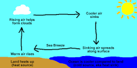
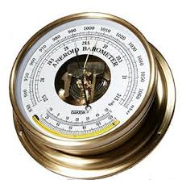

Geography is the scientific study of the earth as the home of human kind. The term Geography is derived from the Greek words: Geo and Graphein Geo means Earth and graphien means to write, draw or describe. These two words are combined to form Geographein, which means to describe, write about or draw the earth.
Definition of environment
Environment refers to external conditions that surround living things.
These conditions influence the behavior or activities of living things.
Environment can be divided into two parts:
i) Physical Environment
External surrounding which is made up of the features that are not created by human beings a though their presence may have been influenced by human activities.
ii) Human Environment
Comprises of activities of people on the earths surface.
Branches of geography
There are two main branches:
i) Physical Geography
It is concerned mainly with the land forming processes that shape the surface of the earth and the resulting features.
Areas of study under physical geography.
The external land forming processes.
Weather and climate.
Soil and vegetation.
The earth and the solar system.
ii) Human Geography
It involves the study of human activities on the earth’s surface.
Areas of study under human geography.
Forestry
Wildlife, tourism and fishing.
Mining, energy and industries.
Population and urbanization.
Agriculture.
Management and conservation of environment.
iii) Practical Geography
This aspect gives learners an opportunity to develop practical skills.
Areas of study under Practical geography.
Map work
Photography.
Field study
Statistics
Importance of geography
It is a career subject.
Creates awareness in the people on the significance of management and conservation of environment.
One is able to acquire basic skills and knowledge which contribute to local, regional and national development.
Through the study of field work, geography teaches one how to manage time properly by drawing a time schedule and adhering to it.
Encourages international awareness, interaction and cooperation.
It enables the learner to understand and appreciate different environmental influences at work on different societies.
We are able to learn and explain the origin of the earth, the solar system and the internal structure of the earth.
Relationship between Geography and other disciplines
Geography relate widely with other subjects as follows.
Chemistry
Geography applies Chemistry concepts in studying the chemical composition of rocks and soils.
Chemistry concepts are used in Geography to explain chemical changes that occur in rocks/soils.
Physics
Physics deal with matter, energy, light, heat, sound, gravity and magnetism while studying the atmosphere;
Geography focuses on heat from the sun as it’s responsible for movement of air, evaporation or water and distribution of moisture in the atmosphere.
Physics is a branch of Science concerned with study of matter and its properties; Physics is important in Geography as it is used to explain how important process such as faulting, folding and vulcanicity happen.
Agriculture
Agriculture deals with farming and involves the growing of crops and the rearing of livestock.
Geography studies the distribution of agricultural activities and how factors like relief, climate and soils affect them
Also looks at both the positive and negative impact of agriculture on the environment.
Biology
This is the study of living things. A branch of biology called ecology dals with how living things relate to each other and the environment.
Biogeography which is a branch of geography is quite similar to ecology as it deals with the distribution of plants and animal life on the earth and their relationships to climate, soil, relief and other factors.
Meteorology and climatology
Meteorology is the study of atmospheric conditions of a given place at a specific time while climatology is the study of weather.
Geography as a discipline deals with all the elements of weather and the distribution of different climatic zones of the world.
Civil engineering
This is the branch of science that deals with the buildings and maintenance of structures like roads, bridges, railways, airports, dams and drainage systems.
Geographical knowledge on landforms, rocks and soils are important before these structures are constructed.
Mathematics
This is the branch of science that deals with numbers, quantity and space. Mathematics helps geographers to simplify and interpret numerical data.
Mathematical techniques in arithmetic and statistics are used by geographers to calculate averages, distances population densities and sizes and reading charts and graphs.
Through mathematics a geographers is able to identify the relationship between different geographical phenomena of the world.
Geology is the study of materials (rocks, soils, etc.), which make up the earth and their changes during the history of the world.
All these aspects are also dealt with in physical geography.
Economics
Economics deals with the production, distribution and consumption of goods and service.
Economics is related to geography in that economic development is based on natural resources like land, vegetation, minerals and animal life.
Geographers are interested in providing a description of the type , location and distribution of natural resources while Economists provide details on how the resources should be used to generate income.
History
History is the study of past events on a time basis thus it deals with past and current events and the people’s way of life
Geographers requires historical knowledge to know how the earth was formed, the distribution of people and their past economic activities.
Demography
This is the statistical study of human population. It deals with the general characteristics of a given population which includes, the number of people living in an area, their ages, composition by gender, birth and death rates
All this aspect is also covered in population geography which deals with the study of population distribution and changes in population structure.
Medicine
This is the science of treating and understanding diseases. It deals with diseases, their causes and possible cures.
Medical geography explores the factors that influence the distribution of pest and diseases, how these factors affect human activities on earth.
Past KCSE questions on the topic
What is practical geography? (2mks)
Name two branches of geography (2mks)
Name any three study areas in human geography (3mks)
Define the term environment (2mks)
Explain three reasons for importance of studying geography (3mks)
Name five human features (3mks)
What is habitat (2mks)
List six disciplines related to geography (6mks)
Differentiate between each of the following: (4mks)
Democracy and population geography
Economics and economic geography
Name two Greek words from which term geography originate (2mks)
Introduction To Geography Answers
Answer 1
Answer 2
Answer 3
Definition of the solar system
The solar system is made up of the sun with the nine planets orbiting around it. The solar system includes the sun, its planets and satellites, billions of meteoroids and thousands of comets.
Members of the solar system
The planets.
Heavily bodies
asteroids
Comets
Meteors
Meteorites
Satellites such as the moon
Origin, shape, size, and position of the earth in the solar system
The two theories that are commonly used to explain the evolution of the solar sytem are:
Passing star theory
Nebular cloud theory
Passing star theory
The theory was advanced by Jeans and jeffreys.
They suggested that a star that a star with greater gravitational pull than the sun passed close by the sun drawing off a stream of material in form of a gas.
This material spit cooled and condensed to form the planets set in orbit by the passing star
The moons and other heavenly bodies moving around the sun were formed to have been formed in the same way.
Weakness of the Theory
Chances of another star approaching the sun are minimal.
High temperature material drawn from the sun or from the star would disperse rather than condense.
It does not explain where the sun and the passing star came from.
Nebula Cloud Theory
It starts that the solar system could have been formed from a cloud or nebular of gas and dust.
As the nebula rotated, it flattened into the disc with a high concentration of material at its centre. The flattening out was due to the centrifugal force.
In the outer sections of this disc, some substances such as methane and ammonia condensed while some like hydrogen and helium remained as gas.
This outer rings formed the planets like Jupiter, Saturn, Uranus and Neptune.
Near the centre of the nebula, temperatures were much higher and the planets were formed by the accumulation of the particles bumping into each other and growing into sizes large enough to exert gravitational attraction to each other.
Continued accumulation and the condensation of these gases led to the formation of other planets.
At the same time, the sun continued to shed off most of its gases hence reducing its rate of rotation to about once in 25 days.
Due to the high temperatures, most volatile gases were probably swept outward.
Weakness of the Theory
The origin and causes of the nebula are not explained.
Composition of the solar systems
The study of the heavily bodies is known as Astronomy. The solar system is made up of the following:
The sun
The Planets
Asteroids
Comets
Meteors
The moon
The Sun
The Sun is actually a star.
It is a yellow colored star of moderate size among the billions of stars in the Milky Way.It rotates on its own axis in an anti – close wise direction. Formed of very hot gases mainly hydrogen 70%.
The sun is a heated star. The temperature at the centre of the sun is about 150,000,000° Celsius and at the surface it is about 6,000° Celsius. It is the source of light and heat of the earth but also of other planets and satellites. The earth would have been eternally dark without sun light.
The solar system
The Planets
Planet is a Greek word for wanderer or one who is constantly moving.
There are nine planets(Mercury, Venus, Earth, Mars, Jupiter, Saturn, Uranus, Neptune and Pluto) in the universe moving around the sun in the same direction.
The sun maintains a strong pull of gravity that keeps all the planets in their orbits.
Facts about the planets
Mercury is the smallest while Jupiter is the largest.
All the planets have moons moving around them except for Mercury and Venus.
Asteroids are small bodies moving around the sun and occupy the spaces between the orbits.
Mars
Referred to as the red planet because when observed from the earth using a telescope it always appears to be red in color.
It has two moons revolving around it.
Jupiter
It is the fifth planet and the largest planet in the universe.
Rotates on its own axis at a very faster speed.
Keep on charging in color from time to time.
Has thirteen rings
Saturn
It is the sixth planet and second largest.
It has three rings around it, the middle ring being the largest and brightest.
It has eight moons/planets.
Neptune
It is the eighth planet and very similar in size ,color and character to Uranus
Pluto
It is the farthest away from the sun.
The temperature is very cold.
Asteroid
These are small planet – like objects also known as the planetoids.
Comets
These are heavenly bodies revolving around the sun in their own orbits with a head
and a tail.
Meteors
Meteors are small heavily bodies that enter the earth’s atmosphere from the universe at very fast speeds.
Meteorites
These are meteors that pass through the atmosphere, fail to burn up and land on
the surface of the earth as large rocks.
Moon
The moon is a natural satellite meaning it has no light of its own.
The Origin of the Earth
Many scientist believes that the earth could have been formed approximately 4600 million years ago.
A hot mass of gases was thrown off the sun.
These gases cooled to form a liquid.
The heavier materials collected at the centre to form a core of heavy liquid metal.
Around this core collected less and less heavy materials to form the mantle and the crust.
As the cooling continued, the outer part of the earth hardened faster to form the crust.
The size of the Earth
The circumference of the earth is about 40,000 km.
The circumference reduces from the equator to the poles because the earth is not shaped like a perfect sphere.
The diameter of the earth at the equator is longer than the polar diameter.
The Shape of the Earth
The earth is a sphere which is slightly flattened at the poles and such a sphere is called geoid/oblate spheroid.
The slightly flattened poles are as a result of the rotation of the earth on its axis.
This movement as also caused the bulge at the equator.
Forces involved in the Formation of the Earth's shape
Centripetal Force
It pulls the North Pole and the South Pole towards each other thus flattening areas at the poles.
Centrifugal Force
It results in the bulging of the earth at the equator due to variation in rotationtowards the equator.
Force of gravity
It attracts objects on the earth’s surface and materials within the earth towards its centre hence making the earth to have a spherical shape.
Proofs that the earth is spherical
Circum-navigation of the earth surface shows that you always end up at the point you started.
Approaching ship from the shore always start with the smoke, the gradually the body. If the earth was flat the whole ship could be seen at once.
The earth rotates from west to east. The sun appears earlier in the east than in the west and if the earth was flat the whole of it could receive light at the same time.
During the eclipse of the moon, the shadow of the earth appears spherical.
The earth’s surface is always circular when standing on a very high tower or when in an airplane.
Since all other planets, the moon and the sun are round when viewed through a telescope, the earth must also be round since it’s also a planet.
Photographs taken by satellite at great distance away from the earth shows that the earth is round.
Rotation and revolution of the earth and their effects.
Rotation of the earth is the movement of the earth on its own axis in an anticlockwise direction from west to east once in every 24 hours.
Effects of rotation
Causes day and night.
It causes difference of one hour between meridians 150 apart.
It causes deflection of wind and ocean currents.
It causes variation in the speed of air masses.
It causes the rising and falling of ocean tides.
Revolution of the Earth and its effects
Revolution of the earth is the movement of the Earth around the sun on its own orbit and it takes 362 ¼ days.
It can also take 366 days to make one complete revolution around the sun in every leap year. A leap year occurs after every four years.
Effects of movement of the earth round the sun
Causes the four seasons.
Causes lunar eclipse.
Causes the Varying lengths of day and night.
Changes in the position of the midday sun at different times of the year -This causes the following, Summer solstice,winter solstice and equinoxes
Characteristics of Summer solstice
Day time is longer than night time at latitudes beyond the equator
The hours of day time increase from the tropics towards the poles
Occurs on 21st June when the sun is overhead at mid – day along the tropic of Cancer.
Characteristics of winter solstice
Occurs 22nd December when the sun is midday along the Tropic of Capricorn.
The sun is visible for only a few minutes when it appears above the southern horizon.
Characteristics of equinox’s solstice
Occurs on 21st March and 23rd September.
The sun rises in the east and sets in the west
Equal hours of days and nights.
The Four Seasons
The are four seasons in a year
The Spring
Summer
Autumn
Winter
Causes of Lunar eclipse
An eclipse is a shadow that results when the sun’s rays are blocked from reaching the earth or moon’s surface.
The lunar eclipse occurs when during the revolution of the earth, the earth lies in between the sun and the moon.
This casts the shadow of the earth onto the moon
The solar eclipse
Occurs as a result of the revolution of the moon around the earth whereby the moon lies between the sun and the earth.
This casts the moon’s shadow unto the earth. The shadow has two parts:
Umbra
Penumbra
Umbra
The is the darkest part
Penumbra
This is the lightest part
Structure of the earth
It consist of a series of layers both internal and external that vary in composition and thickness.
The internal layers are:
It is an envelope of transparent and odorless gases held to the earth bygravitational attraction.
It consist of four main layers.
The layers of the atmosphere from the earth’s surface upwards are :
Troposphere
Stratosphere
Mesosphere
Thermosphere
Hydrosphere
The part of the earth’s surface covered by water mases. E.g. the oceans,rivers, lakes and swamps.
Internal structure of the earth
Lithosphere or crust
This is the outer shell of the solid earth made up of variety of rocks.
Composed of series of plates which are in constant motion.
It also consist of the continental and oceanic crust.
Compostion of the Mantle
It is made up of two parts / upper mantle and lower mantle.
Lower mantle is viscous fluid.
Upper mantle is elastic solid. Semi-molten.
Dominant mineral is olivine / ferromagnesian silicate.
The mantle has an average density of 3.0 - 4.0 gms/cc.
The mantle and the core are separated by a layer of discontinuity called Gutenberg discontinuity.
Barysphere/Centrosphere
Composed of very dense rocks made up of nickel and iron.
It is divided into two zones:
The outer core.
The inner core.
Characteristics of The outer core.
The outer core is composed of molten rock material.
It is made up of iron and nickel.
It is about 2100 km to 2890 km thick.
It has temperatures ranging from 37000C to 5,0000C.
It has an average density of 10.0gm / cc to 12.3gm/cc.
Characteristics of the inner core.
It is solid
Composed of hard rocks.
Reasons why the interior of the earth is still hot.
The overlying rocks generate a lot of pressure that create heat on the rocks beneath.
During the formation of the earth, the outer part cooled faster than the interior thus trapping the heat beneath.
Through radio activity, materials beneath collide creating friction that generates heat.
Past KCSE questions on the topic
State two effects of the rotation of the earth (2mks)
The diagram below represents the structure of the earth. Use it to answer the questions
a.Name
The parts marked P and Q
The discontinuity marked R
b. state three characteristics of the mantle
The diagram below shows the composition of the solar system
a)Name the planets marked F and G (2mks)
b)State three effects of the rotation of the earth on its axis(3mks)
a) What is the solar system?
b) Use the diagram below to answer the questions that follow.
What type of eclipse is represented by the diagram?
Name the features marked L and M
a)
Give the two dates in a year during which the number of hours of darkness is equal in both the north and south poles.
Why do the lengths of days and nights vary from one part of the earth to another?
Apart from the sun name other heavenly bodies.
b)The diagram below shows the revolution of the earth around the sun. Use it to answer the questions that follow
If the earth takes 366 days to make a complete revolution during a leap year, how long will it take to move from position 1 to position 4?
What season is experienced in the southern hemisphere when the earth is in Position 1?
Define the following,
Solar System
Galaxy
Star
Asteroids
Differentiate between the following
Dateline and international dateline
Meteors and Meteorite.
State three differences between solar eclipse and lunar eclipse.(2mks)
State four factors that support life on planet earth.(4mks)
a) List four effects of earth rotation.(4mks)
b) At Nairobi on longitude 37°E local time is 1 p.m. What time would it be at Sarissa on longitude 41 °E?
a)Define equinox.
b)State characteristics of summer solstice.
The earth is inclined to the ecliptic plane at an angle of..... and the axis is also inclined at an angle ..... to perpendicular line.
State three weaknesses of the passing star theory.(6mks)
Differentiate between hydrosphere and atmosphere.(4mks)
Explain reasons for flattening and bulging of earth.(4mks)
State characteristics of winter solstice (4mks)
Differentiate between summer solstice and winter solstice.(4mks)
(a) What is an eclipse?(2mks)
Apart from planets name other heavenly bodies
Topic 2 Answers
Answer 1
Answer 2
Answer 3
Weather and Climate
Distinction between weather and climate.
Define Weather
Weather is the condition of the atmosphere for a short period of time usually a day.
Elements of weather
These are a number of factors or conditions of the atmosphere. They include the following:
Temperature
Humidity
Precipitation
Air pressure
Winds
Sunshine
Cloud cover.
Temperature
This is the degree of sensible heat within the atmosphere. The temperature is caused by radiant heat received from the sun.
The process of transmission of sun’s energy in the form of short wave is called insolation/solar radiation. Radiation is the process by which energy is propagated or transferred through a medium by means of wave motion.
The amount of solar radiation reaching the earth is determined by the following factors:
The intensity of the sun’s radiation in the space and the earth’s average distance from the sun.
The area and nature of the surface on which the rays falls.
The inclination/angle of the surface on which the sun’s rays fall.
The position of the earth on its orbit which produces different seasons.
The transparency of the atmosphere.
The atmophere is heated through three main process
- Radiation
- Conduction
- Convection
Radiation
All bodies emit/radiate energy in the form of waves called electromagnetic waves.
This energy travels outward from its source, spreading equally in all directions.
The intensity of radiation depends on:
- Size of the body emitting it
- Temperature of the body emitting it Radiation does not require a medium hence it can travel through a vacuum.
The earth emits heat by long-wave radiation called terrestrial radiation which is invisible
Conduction
This is the transfer of heat through matter without moving it.
It is the transfer of heat energy though motion, from one molecule to another. Air in the atmosphere is heated by direct contact with the earth.
Convection
This is the transfer of heat by mass movement of fluid.
Convection in the atmosphere takes place when air is heated by the earth and becomes less dense.
The colder dense air above the surface descends down to replace the warm rising air.
The colder air on reaching the surface in turn becomes heated and rises. This movement of lighter air upwards and dense air downward creates cycles called convectional currents.
Humidity
This is the amount of water vapor in the atmosphere
Significance of variations in humidity
The amount of water vapor in a given volume of air is an indication of the atmosphere’s potential capacity to hold moisture.
Water vapour regulates the heat loss from the earth.
Water vapour regulates the heat loss from the earth.
The temperature at which air becomes saturated is known as dew point.
Absolute Humidity
This is the actual amount of water vapour in given volume of air at a particular temperature expressed in gm/𝑚𝑚2.
Relative Humidity
This is the ratio between absolute humidity of a given mass of air and the maximum amount of water vapour that it can hold at the same temperature.
Precipitation
Precipitation is the forms of moisture, which fall from the atmosphere to the earth’s surface.
The amount of water in the atmosphere comes from evaporation of water from:
i.The grounds
ii.Open water bodies
iii.Plants through Evapo-transpiration
Major Forms of precipitation
Dew
Frost
Snow
Mist and fog
Rainfall
Dew
Forms at night when the air in the lower parts of the atmosphere gets cooled and the water vapour in it condenses into droplets which are then deposited on objects.
Conditions necessary for the formation of Dew
The air should be calm so that it can remain in contact with the ground long enough to be cooled below its dew point.Unless that temperature has been reached, dew cannot be form.
Day time should be warm to accelerate evaporation and thus provide a lot of water vapour in the air.
A cloudless night accelerates the rate at which the earth losses the heat gained during the day.
Frost
It refers to tiny ice crystals deposited on objects on the ground.
Snow
This is the precipitation that falls in the form of flakes of numerous tiny ice crystals.
Mist and fog
Mist is a mass of tiny water droplets suspended immediately above the ground.
It forms when air is called below dew point but the resultant water droplets remain suspended.
This causes obscurity or cloudiness which reduces visibility to between one and two kilometers. Fog is denser and visibility is less than one kilometer but formed in the same way is dew.
Main types of fog
Radiation fog – This forms when air in contact with the ground is cooled as a result of terrestrial radiation.
Advection fog – This form a result of warm moist air passing over a cooler land or water surface.
Hill fog – Forms on a low sheet of cloud on hills as a result of moist air stream advancing inland from the sea.
Frontal fog – This forms at points where cold air masses meet with warm air masses. The cold air causes moisture in the warm air to condense and form fog.
Steam fog – A fog associated with cold air passing over the surface of Warm air.
RainFall
A form of precipitation from the clouds in the form of drops of water. Lines drawn on a map to show areas receiving the same amount of rainfall are called isohytes.
Air that condenses to form rainfall may be made to rise in three different ways:
When winds blow over a mountainous region.
When hot air rises by convectional currents.
When warm air rises over cold air.
Types of Rainfall
Relief/Orographic
Relief rain occurs in areas where onshore winds rise over hilly or mountainous regions lying parallel to the coast. It also occurs in areas where moist air is forced to ascend relief features far from water bodies. The rainfall is experienced in Kenyan highlands and the rift valley.
Formation
A water body/ sea lake is heated causing evaporation.
Moist air from the sea is forced to ascend up a hill/ mountain size.
Forced ascent leads to cooling of air.The moisture in the air condenses forming clouds.
Rain falls mainly on the windward side of the hill/ mountain
Convectional Rainfall
Experienced in areas around the equator which get intense heating from the sun E.g. Lake Victoria and coastal regions
Formation
When warm air is heated, it rises in the form of convectional currents.
When this air reaches higher in the atmosphere, the moisture in it condenses to form clouds which later fall as rain.
It falls mainly in the late afternoons usually accompanied by thunder and lightning.
It falls in large drops thus its torrential.
It last for a short time.
Sometimes accompanied by ice pellets known as hailstones.
Cyclonic/Frontal
When warm moist air is forced to rise over cold air.
The moisture in it is cooled and condenses to fall as cyclonic rainfall.
The point where the two air masses meet is called a frontal zone.
It is usually very heavy and is accompanied by thunder and lightning.
Air pressure /atmospheric pressure
Air pressure is the weight exerted by the atmosphere on the surface of the earth. Pressure decreases with increase in altitude. Lines on a map connecting places with the same air pressure are called isobars.
Factors influencing atmospheric pressure on the earth’s surface.
The altitude of a place on the earth’s surface.
The amount of temperature
The rotation of the earth
Winds
Wind is a moving air over the earth’s surface.
Air moves from areas of high pressure to those of low pressure.
Types of winds
Land and sea breeze
Katabatic and anabatic
Chinook
Sea breeze
This is the movement of cool air from the sea to the land during the day.
Formation of sea breeze
During the day the land heats faster than the sea.
The air over the land rises.
Cooler air from the sea blows towards the land to replace the rising air
The cool air from the sea is called sea breeze
what causes sea breeze
1.Differences in atmospheric pressure between the land and the sea, the land has a lower pressure.
2.Differences in temperature between the land and the sea, land is warmer.
Effects of seab breeze
1.It lowers the high temperature on land (cooling effect).
2.It might lead to convectional rainfall,
Land Breeze
This is the movement of cold air from the land to the sea at night.
Formation of Land Breeze
During the night the sea is relatively warmer than the land since the land losses heat faster.
The air over the water being warmer rises while the cooler dense air from the land flows in to replace the rising air.
This causes land breeze.

Sunshine
This is the direct rays of sunlight received on the surface of the earth. Places of same sunshine intensity on a map are joined by lines referred to as isohels.
Factors affecting sunshine intensity and duration
Latitude
Aspect
Cloudcover
Cloud cover
A cloud is a mass of tiny visible particles of water or ice which is formed by condensation.
Ways in which clouds are classified
According to the altitude of their bases.
Their appearance/structure.
Their formation
Types of clouds
Cyrrus Clouds
Thin,feather-like
Ice crystals
High altitudes
Patches or bands
Stratus
Gray,low bases
Sheet-like
Usually associated with low.
Pressure systems
Cumulus
Convectional currents
Flat based dome-shape tops
Rain not likely
Cumulo-nimbus
They are big, dense, heavy masses of cloud.
Causes heavy rains or thunderstorm.
Darker at the base and sometimes white at the sides.
Other types of clouds
Cloud
Description
Cirro – stratus
-Thin sheets covering the whole of the sky.
-Have a milky appearance.
Give rise to haloes when the sun or moon shines through them.
cirro-cumulus
White clouds consisting of white ice crystals.
Have a thin base.
Globular in appearance or arranged in ripples.
Alto-stratus
Uniform in layers and contain water droplets.
Forms sheet of grey – white color.
They are transparent.
Alto-cumulus
Uniform sheets of thin flakes or flattened globular masses arranged in lines/waves. Vary considerably in thickness and shape
Strato-Cumulus
Loose in structure with large globular masses frequently arranged in groups, lines or undulated formations.
They are big but vary greatly in sizes and shape.
They are grey or grey – white in color.
Nimbo-stratus
A rain cloud.
Shapeless, dark –grey and dense.
Spreads all over the sky in low uniform layers.
A Weather Station
This is a place where the elements of weather are observed, measured, and recorded.
Factors for siting a Weather station
It should be in an open place with free flow of air.
Away from barrier e.g. trees.
Should be on a fairly level ground..
The site should be free from flooding.
The site should provide a wide view of the surrounding landscape and the sky.
The area should be secure.
Instruments for measuring weather elements.
Instruments that they are likely to be found in a weather station:
-Thermometer - temperature
-Rain gauge - rainfall
-Hygrometer - humidity
-Barometer – air pressure
-Anemometer - wind
-Sunshine recorder – duration and intensity of sunshine.
-Wind vane – wind direction
Some of these instruments are placed in a wooden weather box known as Stevenson screen. Which provides the thermometers with free flow of air and shade.
Instruments found in the stevenson screen are
Maximum thermometer.
Minimum thermometer.
Six‘s thermometer.
Hygrometer.
Recording and calculating weather data.
Measurement of Temperature
Maximum thermometer
Minimum thermometer
Six’s thermometer – combined maximum and minimum thermometer.
Maximum and minimum thermometer to measure the maximum and minimum temperatures
When temperature rises, the mercury expands, pushing the metal index along the tube. When temperature falls, the alcohol contracts and pulls the metal index along the tube
How a maximum thermometer works 3mks
When temperature rises the mercury in the bulb is heated and expands. √ ½ The mercury flows towards the bulb, as it moves forward; it pushes the metallic index in the capillary tube. √ ½ When the highest temperature of the day is reached and it begins to cool,the mercury contracts and withdraws towards the bulb.
The metallic index is left at the position it was pushed to.
The point of the index which was in √ ½ contact with the mercury indicates the highest temperature reached during the day.
After the reading is taken, the index is set by placing a magnet on the glass √½
and gently moves it towards the bulb. The index is dragged until it touches the mercury.
The Six’s Thermometer
For the Six’s thermometer (U-shape maximum and minimum thermometer),the temperatures are obtained by reading the values indicated at the bottom of the metal index (indicators).
After taking the readings, the thermometer is reset using a magnet.
The readings of the minimum and maximum temperatures are useful for the calculation of the following: Mean daily temperature/ Diurnal temperature range – It is obtained by finding the average between the maximum and minimum temperatures recorded during the day/24 hours. The Diurnal Range of temperature – The difference between the maximum and minimum temperatures recorded in a day (24hours). Mean annual temperature – sum of mean monthly temperatures in the year divided by 12. Annual temperature range – This maximum temperature minus minimum temperature recorded in a year.
Measurement of humidity/psychromotor
Humidity is measurement by a wet and dry bulb thermometer known as thermo –hygrometer.
The difference between the two thermometer readings is used to calculate relative humidity using a humidity table.
If the temperature is saturated there is no evaporation hence the temperature readings on both thermometers remain the same.
This means that the relative humidity is 100%.
Relative Humidity
Relative humidity refers to the ratio between water vapour actually present in the air and its capacity to hold water vapour at a given temperature.
It is called using the following formula:
Relative humidity depends on both the absolute humidity and temperature. If the moisture remains constant then the relative humidity will decrease as temperature rises and will increase as temperature falls.
Hygrometer is also used to measure relative humidity.
Measurement of Rainfall
A rain gauge is used to measure the amount of rainfall.
The rain gauge is sunk into the ground and its top being 30cm above the ground level.
To avoid surface run off and splashing of water during rainfall.
The funnel at the top will direct rain water into the cylindrical container containing a glass jar which will collect the rain water.
The collected rain water will be emptied into a measuring cylinder which will give the amount of rainfall in millimeters for the clay.
From rainfall figures it is possible to calculate the following:
Daily rainfall - the amount of rain that falls over 24 hours.
Mean monthly rainfall – obtained by adding all the total monthly rainfall figures for a year and dividing them by 12.
The mean annual rainfall – Obtained by adding total annual rainfall usually for a period of 35 years and dividing by 35.
Measurement of Air Pressure
Atmospheric pressure is measured in millibars using an instrument known asbarometer. There are two types of barometers:
Mercury Barometer
Aneroid barometer
Mercury Barometer
The height of the mercury column is a measure of the air pressure.
Aneroid Barometer
The aneroid barometer consist of an air tight metal box which is a partial vacuum.
The box responds to changes in pressure by expanding when the pressure falls. Collapse slightly when pressure increases.
These movements are conveyed by a series of levers to a pointer.

Advantages of aneroid Barometer
It can record changes in atmospheric pressure as they occur during the day.
Measurement of Wind
The instrument used to determine wind direction is wind vane.
When the wind blows, the arm swings until the pointer faces the direction of the wind.
The arrow points the direction in which the wind is coming from.
Windsock
A windsock is also used to determine wind direction.
It points to the direction the wind is blowing to.
It is commonly found in air strips
anemometer
It measures the speed of wind in kilometers per hour or in nautical miles.
Measuremnet of sunshine
Sunshine is measured using an instrument called sunshine recorder
It records the duration and intensity of sunshine.
Structure and composition of the atmosphere.
The Atmosphere
The atmosphere is a thin layer of gases surrounding the earth and held by the earth’s gravitational pull.
The struscrure of the Atmosphere
The atmospehre consists of four main zones
Troposphere
Stratosphere
Mesosphere
Thermosphere/Ionosphere
Characteristics of troposphere
Most weather phenomena occur in this layer.
Contains the weather making constituent/life supporting layer.
Temperature decreases with increase in altitude (positive lapse rate)/ rate of 6.50C per 1000m.
Pressure falls with increase in height.
Rises to about 15km above the surface of the earth.
Contains most of the atmospheric water vapour, cloud, dust/pollutants There is a layer of discontinuity between the atmosphere and the stratosphere called the tropopause. In this zone there is no change in temperature with increase in height. Hence it experiences zero lapse.
Characteristics of Stratosphere
Layer above the tropopause.Contains very little dust and water vapor, hence no clouds are found in this layer.
Temperature increases with increase in altitude a process known as negative lapse rate.
There is steady increase in temperature caused by the over concentration of Ozone gas.
Winds are light in the lower part but increases with height.
Pressure falls as the air is dry.
Stratosphere is a protective shield against meteorites that usually burn out as they enter the earth’s gravitational field.
The upper limit of the stratosphere is marked by the stratopause .A layer of discontinuity between the stratosphere and mesosphere.
Mesosphere
Lies above the stratosphere.
Experience temperature decrease with increase in height hence it has a positive lapse rate.
Temperature fall quickly as there is no water vapor, cloud dust or ozone to absorb incoming radiation.
The area experiences the atmospheric lowest temperature and strongest winds.
The layer of discontinuity between the mesosphere and the upper most layer of the atmosphere is called mesopause.
Thermosphere /ionosphere
Contains electrons and ions that influence radio waves.
Temperature rises rapidly with height perhaps reaching 15000 c.
This is due to an increasing proportion of atomic oxygen in the thermosphere.
The structure of the atmosphere
The composition of the atmosphere
The atmosphere is a mixture of oxygen with inert gases such as argon
Apart from water vapor name two other substances that are suspended in the atmosphere.
Gases such as – carbon dioxide and oxygen.
Air (wind) -
Clouds
Pollen grains and smoke/dust particles
Weather forecasting.
Weather forecasting is the prediction of weather situation for a given place within a short period of time like an hour, a day, a week, a month or a year.
Methods of weather forecasting
Methods of weather forecasting are grouped into three:
Ancient
Weather lore methods
Modern methods
problems of weather forecasting
- Inaccurate data
- Defective instruments
- Personnel with limited skills
- Vagaries of nature such as earthquakes
Significance of Weather Forecasting
Determines times for sea and air travel.-
Determine time when sporting activities take place.
- Determines the fishing activities and habits in the area.
- Help determine suitable clothing for the day.
- Help plan farmers calendar of activities.
- Help plan suitable housing.
Factors influencing weather
Cloud cover and humidity
Clouds determine the amount of solar radiation reaching the earth's surface and the amount leaving the earth's surface. This determines temperature conditions.
Day temperatures are moderated by clouds.
Areas of thick rain clouds have high rainfall
Latitude
Latitude influences temperature over the surface of the earth. Areas near the equator are warmer since the sun’s rays are more intense within the tropics because the sun is almost overhead throughout the year/high latitudes experience lower temperatures because the sun’s rays strike the ground at a narrow angle and spread over a wide area.
Latitude influences seasonal variation of rainfall. Some areas receive maximum rainfall when the position of the sun is overhead.
Latitude influences the intensity of sunshine. Places near the equator receive more intense sunshine than those far away since the sun’s rays are concentrated over a smaller area/the sun strikes the earth’s surface at right angles/the sun’s rays travel over a shorter distance thus less
Altitude
-Lowlands are usually warmer than highlands because the atmosphere becomes thinner as you go down hence the higher you go the cooler it becomes.
This is because the sun’s rays do not heat the air directly but heat the earth which in turn heat the atmosphere.
Distance from the sea
During hot seasons coastal lowlands are relatively colder than inland areas on the same latitude due to effect of sea breezes which bring cold air to the land.
In winter land loses heat gained in summer faster than the sea. Sea breezes carry warmer air to the land making areas closer to the sea warmer than inland areas.
Coastal lands receive more rainfall than the interior of continents .This is because the coasts receive moist winds from the sea and by the time the winds reach inland areas they are usually dry.
Air Masses
An air mass is a widespread body of air with uniform properties such as temperature and moisture content and moves in one direction.
When an air mass moves out of its region of origin /source, it affects all areas it transverses over in terms of temperature and moisture conditions.
Aspect
This is the general alignment of the slope to the sun’s isolation.
The slopes of high areas which do not receive direct sunrays have lower temperatures.
The influence of aspect on temperature is more significant in the mid and high latitude areas than in the tropics where the sun is always overhead.
Human activities
The human activities influencing climate include the following:
• Settlement and agricultural activities
• Development of urban centers
• Construction of Dams
Settlement and agricultural activities
Before people settle in a given area, they clear natural vegetation to make room for settlement.
They also clear vegetation to be able to grow crops.
When large areas of vegetation is cleared the effect on climate can be very significant.
Development of Urban Centres
Smoke from factories and vehicles can lead to formation of fog which reduces visibility and also likely to cause an increase in temperature.
The presence of buildings and planned roads within an urban set- up can also change the direction of wind by making it blow along the streets.
Construction of dams
When dams create large human made lakes, they tend to have a modifying effect on the temperatures of the surrounding land.
They also lead to an increase in the amount of moisture in the atmosphere through evaporation leading to an increase in the amount of rainfall received
Factors influencing weather.
Classification of Climate
Climatic zones may be classified based on the following:
• Temperatures
• Physical components using measurable quantities such: net ,radiation, temperature, precipitation.
• Soil types.
Using these physical components three major climatic classifications have been advanced. These are:
The thornwaite classification
The koppen climatic classification
The miller's classification
Distribution and characteristics of climatic regions of Kenya
seven climatic types have been identified in Kenya as shown in the figure below.
Modified Equatorial climate of the Coast
It covers the coastal belt of Kenya extending from Vanga in the south – east to Lamu in the north coast. It is due to the presence of the Indian Ocean.
Characteristics
No real dry month but rainfall is low than Equatorial.
Rainfall is heavy 1600 mm/year. Temperature ranges between 20°C to 27°C.
It has double maxima rainfall, mostly afternoon.
Relative humidity is high between 1500 and 2000mm all the year round.
Has a double maxima rainfall regime i.e. two rainy seasons
Modified Tropical climate of the Highlands
It is found mainly in the highlands east and west of rift valley. Modification is due to the relief. It is also referred to as highland sub-tropical climate.
Characterisctics
Temperatures are much cooler than expected of tropical climate because of the high altitude.
Receives rainfall through the year.
It has double maxima rainfall regime.
Relief/orographic rainfall is common.
Annual rainfall totals ranges from 1000 – 1500 mm.
The average temperatures ranges between 17°C to 24°C.
Experiences moderate humidity. Mean annual range of temperature is 3°C to 5° C.
Modified Equatorial climate of Lake Victoria basin
It is located within the lake region of Kenya and mainly covers Nyanza and Western Provinces. Modification results mainly from the varied relief and the influence of the Lake Victoria.
Characteristics
Rainfalls throughout the year / no dry month.
Rainfall ranges between 1,000 – 1600 mm.
Rainfall is mainly conventional in nature.
Double maximum of rainfall regime.
High humidity.
High temperature(s) throughout the year.
Small annual range of temperature
Modified Equatorial climate of the North Western Borders
It is best seen in the Kara Suk areas and is mainly considered to be a continuation of the climate of western and Northern Uganda.
Characterstics
Rainfall totals are lower than in typical equatorial climate averaging 850 mm per year. Most of the months are dry.
It receives convectional rainfall between June and September. Temperatures are generally high throughout the year.
Tropical climate of the Narok and southern Taita/kwale Areas
It is located in areas around the Loita hills, Taita hills and shimba hills.
Characteristics
Rainfall comes in March to May and October to December with maxima in April and November. High relief of hills such as loita exerts a cooling influence on the climate making it more tolerable than the semi-desert climate of Eastern Kenya.
Tropical continental/Semi –Desert Climate of Eastern Kenya
It is found mainly in Eastern Kenya in areas such as Isiolo, Garissa, and Tana River and in Southern Kenya in areas such as Kitui Machckos, Kajiado and parts of Northern Kenya in areas includeing Mandera, Moyale and parts of Turkana.
Characteristics
It is generally dry with less than 500m of rainfall which is unreliable.
It has large diurnal and annual ranges of temperatures.
The skies are generally clear. Temperature are high with mean between 22°C and 27° C.
Desert Climate of Central Northern Area
Covers the northern Kenya. Wajir and Lodwar are in this climate region
Characteristics
Has low rainfall — less than 250mm p.a.
High temperatures throughout the year.
Night temperatures are extremely low.
Low humidity.
High temperature range. Sandstorms are common. Occasional floods covere4 by sporadic rain
Distribution and characteristics of Climatic Regions of the world
According the miller’s classification, the world climatic regions can be classified into four broad climatic belts. These are:
Hot climates
Warm temperate climates
Cool temperature climates
Arctic/tundra climates ( very cold climates)
Mountain climates
Hot climates
These are found approximately 200 degrees N and S of the equator. The zones are most extensive in Africa and South America.
It can be subdivided into the following climatic sub –types:
a.) Equatorial climate
b.) Tropical monsoon and tropical maritime
c.) Savannah ( continental interior)/Sudan type
d.) Tropical desert
Equatorial climate
It is mainly found in the following regions:
South America – Amazon Basin, the West Coastlands of Ecuador and Colombia.
Along the coast of West Africa from Guinea to Cote de Ivoire and the Western parts of the Ghanaian coast.
In Equatorial Africa from the southern part of Nigeria through Cameroon,Gabon ,Central African Republic of Congo.
Southern East Asia – Malaysia and Indonesia and also the stretch between Burma and Vietnam.
Characteristics
- Experience high temperatures (24 – 27 0 C).
-Experience the small annual range of temperatures of 30 C.
-Mean annual rainfall exceeds 1500 mm and is evenly distributed throughout the year.
-It receives double maxima rainfall regime after the equinox.
-Low diurnal range of temps of approximately 60C.
-High humidity due to high rainfall and high evaporation rates.
-Major winds due are trade winds.
-Rainfall mainly conventional but orographic is common in Mt areas.
Thick cloud cover throughout the year.
Tropical Monsoon
This climate is experienced in the tropical and temperate latitudes that are heavily affected by seasonal land and sea winds. The countries that experience tropical monsoon type of climate outside Africa are Mexico, India, Bangladesh, Burma, Vietnam, Indonesia and North of Australia. In Africa they are Guinea and parts of Sierra Leon.
Characteristics
- Temperature range from 15°C in the cool season to 32° C in the hot seasons.
- It experiences moderate temperature ranges between 9°C and 18° C.
- High rainfall during the summer.
- It has a marked dry season during winter.
- Low pressure during summer hence winds blow onshore bringing heavy rains.
- High pressure on the land during winter hence blow offshore
- Cloudy skies in summer and clear skies in winter.
- Seasonal reverse of winds.
Tropical desert climate
It lies between 15° and 35° and of the equator on western margins of continents that are washed by cold ocean currents. Examples include: the Sahara, the Kalahari, Namib, Iranian Desert, Mexican Desert, the Great Austrian Deserts, Arabic Deserts, Atacama Desert and Thar Desert in Asia.
Characteristics
- Low rainfall approximately 250 mm per annum.
- The rainfall is unreliable
- The solar radiation is intense.
- The winds are warm and dry, hence bring no rain.
- Skies are always cloudless hence temperature often go over to 32° C
- No real defined season.
- Fash floods and thunderstorms are common when it rains.
- Humidity is low and the evapotranspiration rate is low.
Large diurnal ranges that go up to 20° C in some areas.
Warm Climate
They lie in regions that are affected by the divergence of winds. There are three types of climate based on rainfall distribution namely:
a.) Warm temperate western margin/Mediterranean climate.
b.) Warm temperate interior /warm temperate continental climate. c.) Warm temperate eastern margin/humid sub –tropical/china climate.
Warm temperate western margin/Mediterranean climate
The main areas experiencing this type of climate are:
• Central coast of California – North America
• Southern tip of Africa – Cape town
• Around Mediterranean sea
• Central Chile – South Africa
• South West and Southern Austria
Characteristics
- Hot summers with temperatures of approximately 210c and mild winters of temperatures approximately 100c.
- Moderate annual range of temperatures approximately 100c.
- Mean annual rainfall of between 500-900-mm.
- Cyclonic rainfall caused by depressions falls in showers in winter.
- Offshore trade winds in summer causes a dry season.
- Hot and cold local winds are common
- Has distinct seasons – spring, autumn , summer and winter
Warm temperate interior/warm Temperature Continental Climate
It is also known as the steppe type climate. It is found in the interior of continents between 30°N and 50°S of the equator.
Main areas where it is found include
• Prairies of Canada and USA.
• Pampas of Argentina in South America.
• The veld of South Africa.
• The towns of New South Wales and Victoria in Austria.
Characteristics
- Temperatures range from 2°C to 6° C in winter.
- Long and cool winters.
- The summers are warm and short with temperatures ranging between 18°C and 21° C.
- It experiences extreme temperatures due to it’s continentally.
- Summer rainfall is caused by convection and depression. Warm temperate Eastern Margin Climate
It is also known as China type or humid subtropical climate. It lies between 23° and 35° N and S of Equator on the eastern margins of continents.
The main areas where it is found are:
• South Eastern states of U.S.A
• Southern Brazil, Paraguay and Uruguay.
• The coastal belt around Durban in South Africa.
• Central China.
• Coastal regions of Australia.
CHaracteristics
- The area has a moderate annual range temperature of about 13°c.
Presence of warm Ocean currents has a moderating influence in winter in coastal areas.
- Winter temperature are low due to the influence of the local winds.
- Typhoons or hurricanes or tornadoes are common and they lead to heavy rainfall.
- In winter the trade winds are offshore resulting in very little rain.
- Convectional rainfall is common in summer.
- Trade winds are onshore causing heavy rainfall in the coastal lands and highlands. - Summers are hot at 26° C whereas winters are mild at 13° C.
- Rainfall is moderate between 760 and 1500 mm in some areas and is well distributed all year round.
Cool Temperate Climates
Found between latitudes 35° and 60° north and south of equator. Cool temperate climates can be divided into the following three types: a.) Cool temperate Western margin.
b.) Cool temperate continental c.) Cool temperate Eastern margin
Cool temperate Western margin.
It is also referred to as cool temperate west coast, European type or British type. It is found on Western sides of continent s between latitudes 45° and 60° North and South of the Equator.
Main areas where this type of climate is found are:
• North West Europe, covering northern Spain through France, the Benelux countries, West Germany, British Isles, Denmark and Norway.
• North West U.S.A and British Columbia in Canada.
• Tasmania in Austria and South Islands of New Zealand.
• Southern Chile.
Characteristics
- Warm summer between 13°c and 15°c and cool winters between 2°c and 7°.
- Small annual range of temperature (3° to 11°c) due to maritime influence.
- Rainfall is well distributed throughout the year ranging from 760 mm to 2000 mm.
- In the lowlands at the coasts, cyclonic rainfall occurs while in the mountainous areas, relief rainfall is dominant.
- Humidity is high in winter ummer days are long and generally warm with irregular thunderstorms.
- Winds blows onshore during winter hence heavy rainfall in winter.
- Winters are mild.
Cool temperate Continental
It is sometimes referred to as Siberian type or cool temperate interior type. It extends between latitudes 35°North and 60° North.
Main areas where it is found include:
• Alaska and most of Canada.
• Eurasia covering Sweden, Finland, Poland, Germany and across former U.S.S.R up to Kamchatka peninsula in the East.
Characteristics
- The winter temperatures are extremely cold.
- Winters are long with longer nights.
- Summers are generally short and warm with maximum temperature of about 19° C in July.
- The annual temperature range is very high especially in the interior.
- Precipitation is mainly in the form of snow, which falls during winter.
- Convectional rainfall accompanied by thunder is experienced.
- The annual precipitation ranges from 400mm to 500 mm and varies from place to place.
- Relatively high humidity.
Cool temperate Eastern Margin
This type of climate is also known as laurentian type or cool temperate east coast or humid continental warm summer type. It is found on the eastern margin of continents of North America and Asia between latitudes 35° N and 50° N.
Main areas where it is found
• The north Eastern parts of U.S.A and Southern Canada.
• North Korea, Northern China and Eastern part of Siberia.
Characteristics
- Winters are very cold with temperature ranging from - 40° C and 0° C.
- Long summers.
- Annual range of temperature is large.
- Humidity is high during summer.
- There is precipitation all year round.
- In winter precipitation is in the form of snow.
- Annual precipitation varies from 600 to 1000mm.
- In summer winds are on shore.
- Rainfall is both conventional and cyclonic.
- Destructive typhoons are frequent in September.
Polar climates /Tundra and Ice Cap (very Cold Climates)
These climates are found above 66 ½ ° North and South (arctic and Antarctic Circles).
The main areas where it is found include:
• Northern parts of America from Alaska through Northern Canada to Greenland.
• Eurasian from Northern Norway, Finland Greenland and Northern former U.S.S.R Antarctica.
Characteristics
- Winters are very cold and last for 8 months in a year with temperatures ranging from -58 ° C to 0 °C.
- Summers are cool but short.
- The annual temperatures range is very large sometimes going up to 73 ° C.
- Permanent cover of snow and ice.
- The area is generally dry with low annual precipitation ranging from 100mm to 250 mm.
- Precipitation occurs mainly during summer.
- During the long cold winters,polar winds are dominant.
- Snow storms known as blizzards are common.
Mountains Climate
This type of climate is best developed in great mountain ranges of the world such as the Alpine Ranges of Europe, the Himalayas and Tibet Plateau of Asia, the Ethiopian Highlands, the east African Highlands, Drakensberg Mountains, The Adamawa and Cameroon Ranges of Africa.
Examples of Mountains with well-developed mountain Climate are:
• Mt Everest ( 8,848 m)
• Mt Kilimanjaro ( 5,895 m)
• Mt Kenya ( 5199 m)
• Mt Ruwenzori ( 5,109 m)
characteristics
- Temperature decreases with increase in altitude.
- Temperatures range from cool to very cold.
- Some mountains peaks are ice capped.
- Diurnal range of temperature is small.
- Pressure on the mountain top is low due to rarefaction of air.
- Rainfall is predominant in these zones.
- Rainfall is mainly relief/orographic.
- Rainfall intensity depends on aspect.
Identify any three types of cold climates.
Tundra climate
Cold temperature eastern margin.
Cold temperature continental
Polar climate
Micro-climate(Local Climate)
Micro climate is a climate which is experienced within a small or localized area and slightly modified or different from the general climate of a region. It mainly arises from the differences in slopes, aspect, and nature of the surface, color and texture of the soil and vegetation cover.
Human activities such as building of cities, dams and industrial plants produce micro – climates. In large cities micro – climate is also referred to as urban climate.
Examples of areas experiencing micro- climates include:
• Dammed areas – Aswan High Dam, Kariba Dam, Masinga Dam.
• Heavily built up areas- Nairobi, New York and Johannesburg.
• Forested areas such as Kakamega and the Aberdares forest.
Aridity and Desertification.
Aridity is a state of land being deficient in moisture leading to scanty or lack of vegetation and deficiency in soil fertility. Desetification is the encroachment of large areas of barren land which are covered with sands.
h3>Causes of aridity and Desertification
The causes are divided into:
- Natural factors
- Human factors
Natural Factors
Rainfall
Insufficient Rainfall of less than 250mm which makes it difficult for natural vegetation to grow or thrive
Temperature
High temperatures which heads to high rates of evaporation.
Ocean currents and winds
Cold Ocean currents being a chilling effect on areas that they wash on shore hence cold desert conditions. Dry winds transfer dry conditions to the areas where they blow.
Location an leeward side
On leeward sides of mountains, rain shadow effects causes aridity. Onshore wind, on crossing mountain barriers, deposits moisture on the windward side hence crosses such barriers as warm dry winds which absorbs moisture rather than causes rain.
Continentally/distance from the sea
Places that are located in the interior of continents are not influenced by the effects of wet winds compared to places located on the shores.
Pressure systems
Areas of the world where high pressure system exist with low humidity have no rainfall because there is no moist air to rise before condensation takes place.
Human activities
i. Poor farming methods for example: Overgrazing, Monoculture, Ploughing on slopes Deforestation. Poor irrigation practice.
ii. Industrialization leading to emission of various gases in the atmosphere which causes pollution and Global warming. iii. Population pressure leading to replacement of rangeland with cultivation.
iv. Where nomadic pastoralism is practiced, large parts of the land have been overgrazed.
v. Destruction of vegetation so as to increase land under cultivation, build industries, acquire building materials and fuel.
Effects of aridity and desertification
i. Desertification lowers the fertility of the soils, hence lowering the productivity of the land.
ii. Reduced food production leading to famine.
iii. Desertification leads to the destruction of the water catchment areas.
iv. Causes destruction of vegetation which consequently exposes land to erosion. v. People from the affected areas migrate to the unaffected areas thus causing population pressure.
vi. It can result in the extinction of plants and animal species and therefore contribute to the loss of biodiversity.
Possible solutions to Aridity and Desertification
i. Controlled grazing of animals.
ii. Afforestation and deforestation programs.
iii. Irrigation of dry land.
iv. Introduction of suitable farming method.
v. Controlling soil erosion.
vi. Use of alternative source of energy other than wood fuel.
vii. Public education on environmental management and conservation
Climate Change
Climate change is the establishment of a new climatic state or continuous changes in climatic state such as temperature and precipitation over time.
Causes of climatic change
Causes can be classified as either external or internal
External Causes
These are causes which operate from outside the particular climatic system for example from outer limit of the atmosphere.
Internal Causes
These are causes which operate from within the particular climatic system for example factors operating from within the earth’s atmosphere. It is mainly concerned with the accumulation of specific gases, which absorb infrared radiation leading to rising temperatures on the earth’s surface and vulcanicity which also lead to emission of gases.
Global Warming/Green House Effects
This is an increase in Carbon IV Oxide levels in the atmosphere leading to an increase in surface temperatures.
Causes of Global Warming
- Depletion of ozone layer exposing the earth to short energy radiation rays e.g. ultra violet.
- Deforestation
Greenhouse gases
- The green houses gases in the atmosphere are transparent to light but absorb infrared radiation.
- They allow sunlight to penetrate the atmosphere and be absorbed by the Earth’s surface.
- This energy is reradiated as infrared radiation which is absorbed by the greenhouse gases.
The Gases include:
Carbon dioxide into the atmosphere.
Chloro-fluorocarbon in the atmosphere.
Methane
Consequences of climate change
i. Global warming / increased temperature may led to increase evaporation of ocean water which may cause heavy rainfall in some areas.
ii. Increased temperature may lead to the melting of ice caps / ice sheets and glaciers leading to rising sea level. Increased temperature may also lead to high evaporation causing drought.
iii. Climate change may cause changes in rainfall pattern in different parts of the world.
iv. In temperate regions, winters are likely to be wetter and summers drier.
v. Wetter and warmer conditions may increase pests and diseases which will affect humans, crops and livestock.
vi. Disruption of the natural ecosystems, through adaptation and extinction of various plants and animals species.
vii. Flooding from rising sea level due to melting of ice.
Evidence of the effects of climatic change in the recent Past
- The heat waves in Greece due to increased temperature which led to the death of many people.
- The receding of the ice –cap on Mt.Kilimanjaro and the disappearing of glaciers on Mt Ruwenzori.
- The melting of polar glaciers have resulted into rise in the sea level.
- The increase I rainfall causing flooding in some parts of South East Asia and Central Europe.
Field-work - a study based on a weather station.
Past KCSE questions on the topic
1. a.) How does a sea breeze occur? (2 mks)
2. a.) Name two theories of the origin of the earth (2 mks)
(b) Name four layers of the earth’s atmosphere (4 mks)
3. a.) State two conditions that are necessary for the formation of fog.
(b) The diagram below shows some types of clouds. Use it to answer the questions that follow.
(i) Name the clouds marked R
(ii) Give two weather conditions associated with cumulonimbus clouds
4. a) the tables below represent rainfall and temperature of stations X and Y.
Use them to answer questions (a) and (b)
a) (i) For each of the two stations calculate the mean annual temperature.
X -
Y -
(ii) Calculate the annual rainfall for station Y
(iii) On the graph paper provided, draw a bar graph to represent rainfall for station x. Use vertical scale of 1cm to represent 50mm
b) Describe the climatic characteristics of station Y.
5. a) The table below shows climatic data of a station in Kenya. Use it to answer question (a)
i) What is the annual range of temperature at the station?
ii) Calculate the total rainfall for the station.
b) State three factors that influence climate.
6. (a) Name two elements of weather that can be recorded at a school weather station
(b) Give three reasons why the recording of data at a school weather station may be inaccurate
7. (a) Describe a suitable site where you would locate a weather station in your School (2 mks)
(b) Give reasons why a Stevenson’s screen is:
(i) Painted White (2 mks)
(ii) Has louvers (2 mks)
8. Define relative humidity. (2 mks)
9. (a) Identify four characteristics of convectional rainfall. (4mks)
(b) State the difference between radiation fog and advection fog. (4mks)
10. (a) Briefly describe how the six thermometers operate. (5mks)
(b) Three ways in which clouds are classified.(3mks)
11. (a) Give three precautions to be taken when citing a weather station. (3mks)
(b) State three factors determining the amount of solar radiation reaching the earth's surface.(3mks)
12. Define the following terms:
(i) Climate
(ii) Relative humidity
(iii) Weather forecasting
(iv) Absolute humidity
(v) Weather lore (5mks)
13. State the advantages of studying weather through field work. (5mks)
14. (a) Describe how you would use the following apparatus during a field study. Rainfall, maximum and minimum thermometers. (3mks)
(b) Identify and explain the formation of the type of rainfall found in the Lake Region or Kenya.(8mks)
(c) Briefly write down two problems associated with the type rainfallabove.
(4mks)
15. (a) What is weather forecasting? (3mks)
(b) List four problems of weather forecasting. (4mks)
(c) State four ways in which weather forecasting is important to the human activities. (4mks)
16. (a) Explain three ways in which clouds influence weather. (3mks)
(b) Use the data below to answer questions that follow.
(i) Calculate mean annual temperature
(ii) Calculate annual rainfall
(iii) Calculate annual range of temperature.
(iv) Calculate the mean annual rainfall
(v) Which is the wettest month? (10 mks) 17. (a) Define 3 air mass. (2mks)
(b) Name types of air masses. (3mks)
(c) A mass of air at 15°C can hold 20gm/cm3 of moisture. The same air at the same temperature has 6gm/cm3 of moisture. What is its relative humidity?
18. Name two instruments placed in the Stevenson Screen. (2mks)
19. Why does sea breeze flow at night time? (3mks)
Definitions
Introduction
Introduction Map work involves drawing pictures, Maps and plans.
A Picture
A picture is an image of an actual object represented either as a drawing, painting or photograph. A picture has three dimension that is length, breadth and height.
A Map
A map is a representation of a part of the earth or the whole earth on a flat surface like a sheet of paper or chalkboard usually drawn to scale.
A Plan
A plan is a map of a place or a picture drawn to scale for a specific use. It is drawn to give specific information.
Relationship between pictures, plans and maps.
A picture gives details in their visible shapes and sizes while a map will show details which a map maker would like to depict. A plan is a chart drawn and meant to give very minute details about very small areas like towns or villages.
Types of maps
The most common types of maps are:
a. Topographical
b. Atlas maps
c. Sketch maps
Topographical Map
The word topographical is derived from the word topography. Topography refers to the description of surface features such as human made or natural.
Natural features shown on topographical maps include:
An atlas map is an allocation of maps in one volume. Atlas maps are dawn to scale and the scale may vary from map to map within the atlas.
Sketch Maps
These are maps drawn to give specific information which the learner wants to know. They are usually not drawn to scale.
Charactersics of a good Sketch Map
i. Be neat and clear.
ii. Have title.
iii. Have a key to explain the meaning of different symbols and signs used.
iv. Be enclosed in a frame
v. Have compass direction.
Uses of Maps
i. To show direction of places and phenomena on the surface of the earth.
ii. To show human and economic activities such as settlement patterns, land – use, communication network, mining areas, forestry and fishing.
iii. To indicate physical features such as relief, drainage patterns, etc.
iv. To show weather trends e.g. rainfall distribution, temperature and climatic regions.
v. To show political and administrative boundaries and so is adjudicated land for ownership.
vi. Have become important in military strategies as enemy positions are clearly pin pointed through the use of maps.
Marginal information.
This is the information that is given on the margin of a map sheet.
This information tells everything about the map.
Common types of marginal information include:
Map series
This refers to the number in the margin of the sheet which identifies the map sheet with other map sheet in the same groups, which have in common the size of sheets or same specification in the margin scale
The Edition
The edition of the map gives the year it was published or republished and helps to explain some omissions of features which could have developed after the time of publications.
Sheet index number
This is the number given to each sheet to identify it in relation to the adjoining ones.
The scale is usually shown on the map as a representative fraction for example 1: 4,000,000
Or as a linear scale and units given in kilometers or miles.
Compass direction And Magnetic Variation
This is given in the form of a diagram as shown below.
The Key
The key contains convectional signs and symbols used on maps to represent both natural and human – made features in a given area.
Various colors and shades are used to represent different geographical phenomena.
The blue/black – represents water features such as seas, coastlines, lakes, rivers and streams.
The green color –represents vegetation this includes forests, woodlands and grass lands.
Vegetation that grows in water is usually represented by blue color.
Relief is always represented by the use of form lines, sport heights and trigonometrical points.
The impression of relief can be emphasized by the use of layer coloring and rock drawing.
The common colors used include various shades of green, orange and brown.
The colors are usually arranged in a sequence. Lighter colors represent higher altitudes.
Map scales: Types of scales, conversion of scales, sizes of scales.
Scales
This is the ratio between the length on a map and the corresponding length on the ground. This means that the scale indicates the relationship between the two distances measured that is the one on the map and one on the actual ground surface.
Types of Scales
There are three types of scales:
i. Statement scale
ii. Representative Fraction (RF) or ratio scale.
iii. Linear scale
Statements Scale
This is when the scale is expressed in words, for example, 1 centimeter to 1 kilometer, or 1 centimeters represents 1 kilometer or 1 kilometer is represented by 1 centimeter.
Representative Fraction (R.F)
- This is a scale where distance on the map are expressed as a fraction of the actual distances on the ground.
- For example ,the scale 1 centimeter represents 1 kilometer can be expressed as a representative fraction this way:
- In this scale, the numerator represents the distance on the map while the denominator represents the actual distance on the ground.
Linear Scale
The linear scale is a line sub – divided into small equal units. Each unit marked the line represents a distance on the actual ground.
For example 1 centimeter on the line represents 1 kilometer on the ground.
The 0 (zero) is usually placed one unit away from the left end of the linear scale.
This unit to the left of the zero is divided into smaller sub – divisions and stands for the secondary scale on which fraction distances are measured .
Advantages
-Ground distances obtained directly without calculations.
Conversion of Scales
1.) To Convert RF to statement Scale
Convert the denominator of the representative fraction into kilometers so that it represents the distance on the ground.
For example ,to covert the into statement scale, first divide by 100,000
100,000 is the number of centimeres in a kilometre.This gives you 1 km. Therefore ,the R.F
When expressed as a statement is 1 cm on the map represents 1 Kilometre on the ground or 1 cm to 1 km.
2.) To convert statement Scale to Representative Fractions
- To convert the statement scale 1 cm to 2 km into representative fractions, the following steps should be followed:
- Express the ground distance in the same units as maps distance ( 2 x 100,000 = 200,000)
- Convert the scale into R.F by expressing the map distance as the numerator and the ground distance as the denominator
- This can also be expressed as a representative fraction 1:200,000
3.) To convert Linear Scale into Representative Fraction
4.) To convert R.F into Linear Scale
Sizes of Scales
Map scales sizes fall into three groups namely:
i. Small
ii. Medium
iii. Large scales
Small Scale Maps
The area represented on a small scale map is large and shows a few details.
- An example of a small scale is 1:1,000,000,000.
- Any Scale from 1:250,000 and above is a small scale.
- The ratio or denominator in such a scale is a large number indicating that the actual lengths have been substantially reduced.
Median Scale Maps
These falls between small scale and large scale maps.
They range from 1:25,000 to 1:50,000.
Large Scale Maps
The area represented on a large scale map is small and shows many details.
The lengths on such a map are less reduced therefore the ratio or denominator is small numbers e.g 1:10,000.
Large scale maps are from 1:25,000 and below.
Distinction between direction and bearing.
Scales are used to:
i. Measure distances on maps
ii.Calculate areas on maps
Measure distances on maps
i. The use of sheet of paper
The distance measured on a map is either straight or curved for example, a road, a river or a railway line.
- The methods used in measuring distance include the use of rulers, edges of paper, strings and pair of dividers.
- The choice of methods used is mainly determined by the nature of the line, that is, weather it is long or short, straight or curved.
a.) Measuring distance along a straight line.
• Mark the two points XY on the map and draw a pencil line joining them as shown below.
• Place the edge of a sheet of paper along the ruled line and on it mark the length of the distance XY as shown below.
• Read the distance by placing the edge of sheet of paper against the linear scale as shown below.
The distance of line XY is 8.2 km.
ii. The use of a pair of dividers
This involves the following steps:
• Spanning the distance to be measured with a pair of dividers.
• Transferring the dividers onto the linear scale and then reading the distance.
For distances which are longer than the span of the dividers, the following procedure should be followed.
• Mark the two points on the map and draw a pencil line joining them.
• Open your dividers to span a convenient number of whole units on the linear.
• Rotate the dividers along the line to be measured and carefully note the number of rotations made.
• Multiplying the distance of the span by the number of rotations to get the distance of the line between two points.
• The line above is sub-divided into a convenient number of whole units on the linear scale.
• Number of Rotations = 5 each rotation covers a distance of 2 km. Therefore the total distance of the line is 5 x 2 km = 10 km.
b.) Measuring Distance along a curved line.
A part from straight lines, you may be required to measure distance between two points along winding route like along a road, river or railway line. The following methods can be used:
i. Use of a piece of string
• Take a length of string – it's best to take one longer than you think you'll need – and place one end on your starting point.
• Now carefully lay the string along to road or path you know you're going to use, following the curves as closely as you can.
• When you reach your finishing point, mark it on you string with a pen.
• Now that you have your distance from the map, you can straighten out your string and place it against the scale bar to find out how far you will actually be travelling
ii. Use of a paper edge
• Another method of measuring distance is to take a sheet of paper and place the corner of a straight edge on your starting point. Now pivot the paper until the edge follows the route that you want to take.
• Every time the route disappears or moves away from the straight edge of your paper, make a small mark on the edge and pivot the paper so the edge is back on course.
• Repeat this process until you reach your destination.
• You should be left with a series of marks along the edge of your paper. You can now place the sheet against the scale bar on your map.
• The last mark you made will tell you the real distance you need to travel.
Finding areas of Regular and irregular shapes
Scales are used to calculate areas of regular and irregular shapes of various features shown on a map.
Areas of regular shapes can be calculated by using standardized mathematical formulae after measuring the respective distances on the map. Examples:
1. Square and rectangles
Area = length x width
2. Triangles
Area = ½ base x height
3. Circles
Area = 𝜋r2
To find areas of irregular Shapes
• The entire shape should be covered with a grid of squares. On a map of 1:50,000 each grid squares should be 2cm2 representing 1km2on the ground.
• Count all the complete squares and number them.
• Count all incomplete squares. Each incomplete square squares should be considered as half square.
• Divide the number of incomplete squares by two to convert them into full squares.
• Add the complete squares and the number of halves divided by two.
• The total should give you the number of full squares covering the shape. Examples:
Number of full squares = 99.
The number of halves squares = 33
Divide half squares by 2 to make 16.5 complete squares.
The total is therefore 99 16.5 = 111.5 sq.km
Direction and bearing
- Direction and bearing are used to indicate a line along which something or an object is moving or facing.
- Direction or bearing may also denote a point of reference on which a particular object or place on a map or the earth is situated.
- We use compass to show direction or bearing.
- In indicating direction, reference to any of the points of the compass can be made. e.g. south of, East of e.t.c.
- While when stating bearing, only one point of the compass is referred to that is North. Bearing is read from north in clockwise direction.
Showing direction on maps
There are two ways of indicating direction on maps:
a.) Traditional methods
i.) Use of land marks
ii.) The heavenly body
b.) Modern methods
i.) The use of points of compass
ii.) The use of bearing.
Traditional and modern methods of showing direction
Traditional Methods
Use of Landmarks
Landmarks are familiar features on the surface of the earth that can guide the traveler in finding the way from one place to another.
Examples are rivers, hills, roads and buildings
use of heavenly bodies
Where there are no land marks such as deserts and large water bodies. It is possible to use:
• The North Star.
• The Southern Cross and the South Pole.
Modern Methods
i.) The use of the compass
A compass is a scientific instrument whose needle always points to the north.
A compass has a total of 32 points as shown below.
North, East, South and West are the four main points referred to as cardinal points.
Modern maps do indicate three expressions of the north as follows:
True or Geographical North.
Magnetic North.
Grid North.
True or Geographical North
This is the position of the North Pole as shown on the globe (the point where longitudes meet.)
Magnetic North
This is the earth’s Magnetic North Pole as determined by the earth’s magnetic field.
This is the direction to which the needle of a compass points when it comes to rest.
The angular difference is known as magnetic variation.
Grid North
It is in the same alignment as the north –south map grid lines on topographical maps.
- It is based on the national grid system. However each map-maker can draw a map and set his own grid north.
- It is usually as close to the true north as possible and coincides with it.
ii.) The use of bearing
- The starting point that is the North-South line is always taken as Oº.
- Bearings are always read in a clockwise direction from the North line through a full circle of 36Oº.
Bearings are stated in three figures. For example, North is stated as 36Oº or of 000º and East as 090º.
Calculation of bearing.
Bearing helps to determine the position of one place from another.
- The figure below illustrate how the position of A from B can be determined by means of bearing.
To measure the bearing of A from B accurately, the following procedure should be followed:
i. Draw a light pencil link to A from B.
ii. Draw a North- south line through point B parallel to the North-South line given in the margin of the map. If the North- South line is not given, draw the line parallel to the grid lines or parallel to the sides of the map running North-South.
iii. Intersect this North- South line with another perpendicular line East-West through Point B.The East –West line should be parallel to the horizontal grid lines or sides of the map due east – West.
- Measure angle NBA using a protractor reading degrees in a clockwise direction from the North line. The bearing of A from B in the diagram above is 225º.Now find the bearing of B from A.
Location of places and features using compass direction, bearing, distance, place names, latitudes and longitudes, grid reference.
The position of a place on a map or on the earth’s surface can be expressed in any of the following ways:
• By use of direction, bearing and distance.
• By use of a place name.
• By use of latitude and longitudes.
• By use of grid reference system.
Use of Latitudes on a Map
Latitude
Imaginary lines drawn on the globe or on a map to show how far north or south a place is from equator.
All latitudes are parallel to each other hence they are also called parallel.
The main lines of latitudes include:
1.) The equator which is the longest also called green Circle.
2.) Tropic of Cancer 23½ᵒN of the equator.
3.) Tropic of Capricorn 23½ᵒS of the equator.
4.) The Arctic Circle 66½ᵒN
5.) Antarctic Circles 66½ᵒS.
The distance between two lines of latitude 1ᵒ apart is approximately 111 km.
Longitudes
These are imaginary lines drawn on the globe or on a map showing how far east or west a place is from the center of the earth.
It is the shortest North- south line that joins any two places on the earth.
The 0ᵒ longitude is the one that is conventionally known as the prime Meridian or The Green which Meridian.
All longitudes to the east of the prime Meridian are numbered from 00 westward to 1800.
To give the position of a place on a map using latitude and longitude's,the following steps are used;
i. Identify the place whose location you want to give.
ii. Identify the nearest numbered latitude and longitude.
iii. Estimate the latitude to the nearest 1ᵒ.For example 7 Nairobi is about 1ᵒ S and 37ᵒ E.
Exmaple
When the local time is 2.00pm at longitude 45ᵒE, what is the longitude of a place whose local time is 8.00pm?
a) Differentiate between a latitude and a longitude. (2mks)
b) Find the time at town X on Longitude 20ᵒW, if the local time t town W on longitude 27ᵒ E is 10.00am. (2mks) \
Solution
Differentiate between a latitude and a longitude.
A latitude is a line based on the angular distance North or South of the equator/it is an imaginary line drawn on the maps/globes from west to East measured in degrees North to South of the equator while a longitude is a line based on the angular distance of a place East or West of the prime meridian/Greenwich meridian (0ᵒ)/ an imaginary line drawn on maps/globes from north pole to south pole measured in degrees East or West of the prime meridian/Greenwich meridian(0ᵒ).
Find the time at town X on Longitude 200ᵒW, if the local time t town W on longitude 70ᵒ E is 10.00am.
-Longitudinal difference
20ᵒ +27ᵒ E =47ᵒ
-Time difference.
47ᵒ x 4min =188 minutes/ 3hrs 8mins.
-X is 3hrs 8mins behind W
Time will be.
10.00
03.08
_______
6.52 a.m
Grid References
A grid is network of imaginary horizontal and vertical lines drawn on a map forming equal squares.
- The vertical lines are called Eastings because they are numbered eastwards while the horizontal lines are called Northings because they are numbered northwards.
- East grid line is given a number starting from the southwestern corner.
- This corner is called grid origin.
- All readings start from the south western corner.
How to give a grid reference
i. Read and give the figure for the Eastings /vertical grid line first and following this figure with the northings/horizontal grid line.
ii. Each eastings or Nothings on a map represent a given number of metres from the point of origin.
iii. When giving a grid reference, both decimal points and commas are eliminated in the co-ordinates and a single continuous figures is given.
iv. All grid values are plain figure that is unit of length are not expressed.
Methods of representing relief on topographical maps.
The term relief means the actual appearance of the earth's surface.
Relief features include valleys , gullies, rolling or undulating plains and dissected landscape.
Vegetation,seas,lakes and ponds and human - made features like buildings roads and runways do not form part of relief features of the earth's surface.
Relief features may be represented by the use of the following ways:
Contours/isohypes
They are lines drawn on maps to join all points with the same height above the sea-level.
Contours are drawn at fixed interval known as the vertical Interval (VI) the vertical interval is always kept constant.
Where contours come too close this suggest that the land is steep and where the contours are far apart, it suggest that the land has a gentle slope.
Contours have one advantage in that they are easy to understand and consequently can be used to interpret the features on the map effectively.
However the effectiveness of the use of contours depends largely on the vertical intervals used.
Formlines
These are lines drawn on a map which are not sufficiently mapped to estimate where actual contours would pass.
This unlike contours form lines are not accurately surveyed.
Formlines are indicated by a broken line.
Pictorial Representation
This method shows land appearance in pictures.
Based on the artist impression of the land scale.
The features are drawn on small convectional pictorial symbols.
Hill Shading
This is an attempt to show reliefs accurately by shading areas which would be in shadow when light is shining from a given direction.
The rays of the light are either oblique or vertical depending on the source.
The shading of the slope depends on its gradient. The steeper the slop, the darker the shade will be on the map.
Plateus,valley bottoms and plains are light shaded.
In oblique lighting, the eastern and south-eastern slopes will be shaded. While north - western and western slopes are unshaded.
Disadvantages
Does not give the heights of places unless spot heights are used.
Does not distinguish uphill from downhill or spurs from valleys.
Neither does it distinguish plateaus from plain land.
Colouring/Layer tinting
In this method different colors are used to show different aspects of relief.
For example light green can be used to represent low lying areas while brown maybe used to show high altitudes.
In this method, the shades become darker with increased heights.
One major advantage in colouring is that it is useful in representing landscapes of varied relief.
Dissadvantages
Dark colours tend to obscure details.
The monotone of colours may not give a good visual impression of plains or plateaus.
Cliff or Rock Drawing
On topographical maps, areas with steep cliffs and rock faces are shown by the use of wedge - shaped black lines. The thin ends of these black lines point downslope.
This method of representing relief is referred to as cliff and rock drawing.
On maps clifs or rock drawing may take one or more of the shapes shown.
Hashures
A method used to represent relief on mountains or hilly areas.
It involves the drawing of lines down slope in the direction of the steepness gradient.
The length and steepness of the hachures indicate the direction of the steepness of slope.
Advantages
Effective in representing relief in mountainous or hilly areas.
Gives a visual impression of the hilly landscape by showing ridges and valleys clearly.
disadvantages
Difficult to draw
Do not show the exact height of the land scape.
Cannot be used to show flat ground on maps.
Identification and description of the following in topographical maps:Landforms, vegetation, drainage, economic activities and settlement.
Physical features and human activities include:
- Landforms
- Drainage
- Vegetation
- Economic activities
- Settlement on topographical maps. Interpretation of physical features and human activities depends on clues available on a particular map.
Precautions taken when describing physical features and human activities on a map.
They include:
i.) Avoid definite words but use words like “suggest that”, “possibly”, “likely indication of’’.
ii.) One clue should not come out with a conclusive description.
iii.) Avoid the following phrases when reading a map:
- The top right corner of the map - but the south eastern area.
- Top of the map – instead the northern part of the area.
- Left corner of the map – instead the north-western part of the area.
- Steep contours – instead use the area is steep as revealed by close contours shown on the map.
- Bottom of the map –instead the southern part of the area.
- The river flows towards left, upwards, downwards, or to the right- the river flows westwards, northwards, southwards, east wards.
iv.) Study the map when looking at the key. Use the key to interpret the information you have got from the map.
Interpetation of Physical Features
Physical features on a map include natural landforms natural vegetation and drainage.
Landforms
Landforms constitute what is referred to on the surface of the earth and on maps as relief.
Relief refers to the way the land surface looks like: whether dissected, rolling, hilly or mountainous.
Landforms can be predicted by the use of contours, conventional signs and names of depicted features.
Types of Landforms
Dissected landform
This refers to part of the earth’s surface that has been deeply cut by many rivers/streams.
On topographical maps, such a landscape is shown by curved or irregular contours.
The more crooked the contours, the more the earth’s surface.
Rolling landform
Rolling landforms /undulating relief.
It is a type of relief with gentle slope represented by spaced contours.
Characterized with absence of high peaks and rivers flowing in pronounced valleys.
Hilly/Mountanious Landform
A hill is a higher ground or an upland that rises up above relatively lower areas or grounds.
They may be regular or irregular.
On topographical maps, they are represented by circular or near circular/concentric contours whose values increase towards the top of the hill.
Valley
This is a low lying part of land bound by two facing slopes.
They are represented on topographical maps with contours that are U/V shaped with their apex pointing towards the higher grounds.
Spurs
This is a piece of raised land jutting into a valley or a projection of land from a mountain or ridge.
Types
Interlocking spurs are those which project into a younger river valley, where the river tends to follow a winding course round obstacles. Truncated spurs are found in glaciated highlands areas. As glaciers moves down a V-shaped valley, they gradually trim off the tips of interlocking spurs forming truncated spurs.
The valley is transformed into a U - shape with near vertical slope and a broad floor as shown below.
Interlocking Spurs
Truncated Spurs
Pass
A pass is a narrow deep gap that lies between high hills/mountain areas. Examples of Passes in Kenya
• Marich Pass in West Pokot
• Kiti pass
They are shown on a map by the absence of contours between high areas but with a transport route passing through them.
Saddle/col
A col (saddle) is a small depression on a hilly area that is located between hills on a ridge.
It is represented on topographical map by a gap between two hills without contours shown on them.
Ridge
A ridge is a roughly narrow and elongated hill with steep slopes on all the sides. The top of the ridge may either be level or rugged with several hills forming in a range.
Ridges are shown on topographical maps by closely packed contours descending on both sides.
Escarpment
This is a relatively continuous line of steep slopes dipping to/facing the same direction.
It exhibits a gentle slope on one side and a short steep slope on the other/opposite side.
On topographical map, an escarpment is shown by closely spaced contours on the steep (scarp) slope but the contours become more widely spaced further down the slope on the gentle slope.
Bays and Straits
A bay is a piece of water jutting into land. Big bay is called a gulf and a small one a cove.Winam Gulf is made up of many bays like Asembo Bay,Kidimu Bay,Kendu Bay and Homa Bay.
A strait is a narrow stretch of water linking two areas of sea, for example ,the strait of Gibralta links the Mediterranean Sea to the Atlantic Ocean.
Channel is a stretch of water joint two seas or two large parts of a water body for example,Rusinga Channel joins lake Victoria to Winam Gulf,Siyu Channel joins the two large bodies of Indian Ocean separated by Pate and Faza islands North of Malindi. A sound is a stretch of water connecting two large water bodies. It is wider than a strait.
A bight is a wider-gentle curve or indentation of the coast, commonly between two headlands but a head of a gulf.
Watershed
This is a high point which separate head-waters of two or more drainage basins. It can be on a ridge, plateau, hill or escarpment.
It is sometimes referred to as a divide, interfluve or water –parting.
It is shown on a map by sources of rivers flowing from a high area downhill to different directions as shown below.
Slopes
This is an inclination/slant/gradient of the land.
A slope is determined by the following
i.) Contour patterns: - these can be fairly straight to represent level surface or curved to show rugged surface.
ii.) Contour Spacing: - contours can be widely spaced to represent gentle slopes or closely spaced for steep slopes.
iii.)Contour heights: - these can be high or low and are used to determine the general direction of slope.1
Slopes can therefore be classified into the following types:
Types of Slopes
Description
Steep
- These are shown on topographical maps by contours drawn very close together
Gentle
These are shown on topographical maps by contours drawn far apart from each other
Even
These are also referred to as regular or constant slopes.
- They can be gentle or steep
- They are shown by contour spaced at regular intervals
- They are found in fairly level areas e.g. plateaus and peneplanes.
Ueven
- These are also referred to as irregular slopes.
- Shown by unevenly spaced contours i.e. widely spaced in one area and closely spaced in another area.
Convex
These are slopes that are steep in the lower sections but become gentler in the upper ends.
- Are indicated by contours that are closely packed together at the lower sections and widely spaced upslope. - Are common in escarpments and along plateau edges
Concave
Are slopes that are gentler in the lower sections and steeper upslope - Are indicated by contours that are widely spaced at the lower sections and closely packed upslope.
Steps to take when describing the relief on topographical map
i. Give or state the general relief of the area covered by the map i.e. the area can be a highland, hilly, lowland or plain.
ii. A highland is depicted by contour/trigonometrical station values that exceed 1000metres above the sea level.
iii. A hilly area will comprise of several conical hills; shown by concentric contours with values increasing towards the summit of the hill or named hills.
iv. Lowland areas will have contour values of below 1000metres above the sea level
v. A plain will be shown by very widely spaced contours whose values range between 0 – 600 metres above the sea level.
vi. Give the range of the altitude of the mapped area i.e. the heights of the highest and lowest points covered by the map. Trigonometrical stations, spot heights and contours are used to determine these.
vii. Candidates are advised to give the exact location of these heights on the map by use of directions of the compass or grid squares.
viii. State the general direction of the slope of the area covered by the map. Use the contour heights; studying their pattern and behaviour. Direction of flow of rivers can also be used to give the general direction of slope.
ix. Identify and name the relief features present in the area and their distribution e.g. many hills/escarpments and give examples.
Vegetation
This refers to the collection of plant cover on the earth surface. In strict geographical sense, it entails the entire plant cover except cultivated crops/plantations.
Different areas on the topographical maps are covered by different vegetation types that include forests, scrub vegetation, scattered trees, woodland, riverine trees, palm trees, thickets, mangrove trees, etc.
All these have symbols that represent them in the key of the topographical map.
Some major vegetation areas covered by the map may be named e.g. Kiptaberr Forest, Tingwa Hill Forest, etc
When describing vegetation, consider
i. Identify the vegetation types in the mapped area.
ii. Use the compass direction to give their distribution.
iii. Do not include plantations as part of the vegetation.
Drainage
These are physical/natural water features that are found on the earth’s surface/mapped area.
They include rivers, lakes, seas, oceans and springs amongst others.
Drainage features on topographical maps are mainly shown by blue colour.
The following points should be put into consideration when describing drainage of a mapped area.
i. Identify the drainage features that are present in the mapped area and state their locations.
ii. State the number of the features i.e. the mapped area has many rivers; giving examples in each case.
iii. Give the type and state of the identified feature i.e. whether seasonal or permanent
Rivers are the most common features of drainage likely to be found in areas covered by topographical maps.
When describing rivers;
• State whether the rivers are permanent, seasonal or intermittent.
(a) Permanent rivers are shown by continuous blue lines (scan). They are likely indication of heavy rainfall and impermeable rock. Season
(b) Seasonal rivers are shown by broken blue lines. (Scan). They are likely indication of low/unreliable and seasonal relief.
(c) Intermittent/disappearing/vanishing rivers are shown by blue lines that end abruptly (scan). They are likely indication of porous rocks, underground drainage and low rainfall
• Name the main river in the mapped area. It is shown by wide/thick and continuous blue lines (scan).
• Give the general direction of flow of the river from the source to the mouth but most preferably; to the mouth.
• Name the drainage patterns exhibited by the rivers and their tributaries in the mapped area.
The major drainage patterns are
a) Dendritic: - tributaries join the main river at acute angles
(b) Trellis: - tributaries join the main rivers at right angles
(c) Parallel: - rivers and streams run nearly parallel to each other
(d) Radial: - rivers flow outwards in all directions from a mountain summit
(e) Centripetal: - formed when many rivers flow into an inland depression
Another drainage feature likely to be found in an area covered by a topographical map is swamps.
When describing swamps; consider the following:
i. Identify the type of swamp i.e. whether seasonal, papyrus or mangrove using symbols shown in the key.
ii. State their location/distribution in the mapped area. Use compass direction or grid references
Settlement
This refers to a place where people live or dwell/or housing units.
They can be both rural and urban settlements.
On topographical maps rural settlements or huts are shown by black dots while urban settlements shown by block shadings that are black in colour.
Settlements patterns refer to the arrangements of housing units on an area covered by a topographical map.
They may be nucleated, linear or dispersed. Nucleated settlement pattern refers to many housing units clustered together round a particular feature e.g. a water point or a market centre.
On topographical maps, they are shown by clustered dots or block shadings Linearsettlement pattern refers to many housing units clustered together round a particular feature e.g. a water point or a market centre.
On topographical maps, they are shown by clustered dots or block shadings Dispersed
settlement pattern is also referred to as scattered settlement pattern. The housing units are considerable distances away from each other.
On topographical maps, such patterns are indicated by scattered dots or scattered block shading.
When describing settlement on topographical map; take into the account the following
i. Identify the type of settlement and state its distribution on various parts of the topographical map e.g. the eastern sections of the map are characterised by nucleated settlements/the mapped area majorly comprises of rural settlements ii. When describing settlement on a topographical map, the following terminologies should be used; DENSE, FEW, NO, SCATTERED/SPARSE.
Examples
• There is dense settlement in the northern parts of the map extract.
• There are few settlements around the swamps.
• The areas around the forest reserves have no settlements.
• Scattered/dispersed settlements are evident on the western parts of the map.
Most likely questions on settlement:
i. Study the map of Nkubu provided and answer the questions that follow.
ii. Identify two settlements patterns in the area covered by the Nkubu map. iii. Describe the settlement of the area covered by the map.
iv. Citing evidence form the map, explain three factors influencing settlement in the mapped area.
v. Students from a school in the mapped area conducted a field study on settlement in the mapped area.
vi. State two ways in which the map may be useful to them.
vii. Name two methods of data collection they might have used during the study. viii. State three problems they may encounter during study.
Functions of an urban/rural settlement as seen in the map extract
These refer to the services that are offered in the mapped area. They may be income generating and social (bring people together).
They must be stated ending or having the caption “ion” or the word “centre” at the end.
They include
Function
Evidence
Industrial Centre
Presence of a processing plants e.g. creameries, cement processing, named industry or a factory.
Agricultural centre
Grain silos and posho mills for crop farming, named plantations/crops, cattle dips and dairies for livestock farming
Sports/Recreation
Sports centre, golf course or a stadium
Forestry centre
Forest Guard Post, sawmills, forests, etc.
Administration
Chief’s camp, District Officer, District Commissioner offices
Education
Chief’s camp, District Officer, District Commissioner offices
Education
Schools, libraries and colleges
Transport & Communication Centre
Roads, railway lines, airports, airfields, airstrips, post office.
Tourist Centre/Tourism
Museums, game parks & national reserves, historical monuments, high class hotels.
Commercial/Trading Centre
Markets, shops and roads converging at a given centre.
Religion
Churches, mosques and chapels.
Medical/health care centre
Health centres, dispensaries, hospitals
Security centre
Police stations/police patrol bases
Most likely questions on Human Activities
i. Study the map of Homa Bay provided and answer the questions that follow.
ii. Citing evidence from the map, name four economic activities in the area covered by the Homa Bay sheet.
iii. Students from Homa Bay High school conducted a field study on functions of Homa Bay township.
iv. Citing evidence from the map, name three functions of Homa Bay Township they are likely to observe.
v. State two ways in which they would prepare for the study.
vi. State two physical problems they may encounter during the study, citing evidence in each case.
Climate
This can be concluded from a topographical map using the following evidence:
(a) The type of crops grown in the mapped area e.g. tea and coffee would depict a cool and wet climate, wattle and sugar cane a warm and wet climate.
(b) The type of vegetation i.e. forest vegetation for a cool and wet climate, scrub vegetation and woodlands for a hot and wet climate
(c) The type of rivers flowing in the mapped area e.g. permanent rivers depict a wet climate (rain falls all year round), while seasonal rivers would show a hot and dry climate.
Soils
Soils on topographical maps are depicted by:
(a) The types of rivers e.g. intermittent rivers will depict porous soils
(b) Seasonal swamps/swamps in general would depict waterlogged/impermeable soils
(c) Type of crops grown e.g. coffee, tea would depict fertile volcanic soils
Enlargement and reduction of maps.
This involves increasing or decreasing sections of the topographical map.
This is done using grid squares and scale.
When sections of the map are enlarged, the scale is reduced while if reduced the scale is increased.
Drawing of cross-sections
A section is a vertical cut through soil, rock or landscape or the representation of the actual appearance of the landscape in diagrammatic form.
Longitudinal sections are called profiles.
Importance of sections in interpretation of maps
• They enable ne to determine the type of lope,whether even,concave or convex.
• They provide a comprehensive appearance of the landscape which can be of great assistance in construction.
• They enable us to determine intrvisibility.
• They give a general impression of the physical appearance of the landscape.
Types of Sections
Transect sections
These are sections drawn to show different types of natural and artificial features.
They can be longitudinal,traverse or radial.
They can show geographical zones like vegetation and changes in landscapes.
A traverse section
It is more accurate and is drawn between two identified points on a given contour map.
It shows the general landscape and other geographical phenomena like vegetation, settlement and communication routes.
Sketch Section
These are sections which are not drawn to scale.
They also represent the appearance of the landscape of a given area between two points.
Sketch sections are drawn by simply estimating the general trend of the landscape.
They show roughly the uphills and depressions.
River Profiles
This is a section along the river valley from the source to the mouth.
The ideal river profile is made up of youthful,mature and old stages
Youthful Stage
- Has torrential course and velocity is high.
- The gradient is steep or broken and irregualar.
- Vertical erosion dominates, leading to formation of steep sided V- Shaped valleys.
The mature Stage/Valley Course
- Made up of gentler gradient with broader valleys separated by rounded ridges.
The old stage/flood plain course/Senile
- Has levelled gradient with broader river valleys made up of flood plains
Cross Sections
A cross section is a diagrammatic representation of the variation between identified points along a straight line.
Steps taken when drawing cross- Sections:
a.) Identify the two end points to be covered by the cross- section.
b.) Draw a light Pencil line to join the two points.
c.) Then fold a paper on the map by placing its straight edge along the line.
d.) Apply the strip of paper on the map by placing its straight edge along the line.
e.) While holding the paper very firmly, on it mark the two end points, then identify the heights of these two points and mark them on the paper.
f.) Mark on the paper the contours crossed by the line. Where there is a river mark with a depression sign, for example ‘U’ and where there is a hill mark with a special sign for example “n”.This downwards and upward symbol will help you draw curves appropriately.
g.) Name any conspicuous features where they appear on the the paper.
h.) Note the highest and lowest points crossed because these will determine your scale.Then calculate the amplitude of relief .The difference between the highest and lowest contour)This is important in ddeterming the vertical scale.
i.) Then determine your vertical scale.When determining the vertical scale a suitable range is necessary.
j.) Draw equal lines on a fresh paper, preferably a graph paper and mark it A and B at both ends. Then draw the vertical lines at both ends. On them mark the heights accordingly. Then remove the strip of paper from the map and place it on the line A and B on your graph paper. Hold the paper firmly and then transfer the information from it to the graph. Plot the heights on the graph.Finally draw a smooth curve to connect the points in form of a line graph.
k.) Annotate or Label the cross- section. When naming, use arrows. Do not draw anything on the section, whether it is a river show by arrows only. Note that the arrows must come from the top and not the bottom because the elevation is viewed from the ground and not underground.
Calculation and interpretation of vertical exaggeration and gradient.
Vertical Exaggeration(VE)
Vertical exaggeration is the ratio of the horizontal scale to the vertical scale. It is normally calculated after drawing the cross-section.
The verical scale is always larger than larger than the horizontal scale and therefore it is always exaggerated.
Calculating the vertical Exaggeration
Gradient
This is the steepness of a slope between two given points.
It is either expressed either as a proportion between the vertical interval VI and its Horizontal Equivalent H.E.
It involves expressing the gradient as fraction, reducing to a decimal and then looking up the angle corresponding to this calculated tangent in a logarithm table.
Determining indivisibility.
Intervisiblity is the ability to see or view two points from either sides.
Ways of determining intervisbility
i. Draw across- section. Then draw a line of sight from the point of observation to other point. If there is any rise any rise which intervene,then the points are not intervisible but if there is no rise which intervenes,then the places are intervisible.The part which is not seen is the dead ground.
ii. By calculating the overall gradient of the line of sight from the observer to the second point or gradients from any possible point of intervention of view to the second point.If the gradient from the line of sight to the far point is gentler than gradients to any interfering points,the two stations are not intervisible as shown below.
Definition of Fieldwork
Fieldwork may be defined as an activity that involves the seeing and using of the environment around us as a laboratory for the teaching and Learning of Geography.
It is a scientific method of study that enables geographers and other researchers to use the available natural and human- made phenomena to understand the environment better.
Fieldwork allows the learners to interpret for themselves what they see and to Confirm the facts and ideas that they acquire in the classroom.
It is one of the activities that make geography a practical subject. The activities may be conducted within the school environment, around the school and sometimes far from the school.
Types of field work.
i. Field study or field teaching.
ii. Excursions. iii. Fieldwork research.
Field Study
A field study is aimed at collecting data in order to achieve specific objectives.
These objectives are formulated and clearly outlined by the researcher before the study.
They are expressions of what the researcher intends to find out during the field study.
The study is conducted by an individual or a group of people.
It is based on a specific theme, such as: A visit to a farm. The data collected in such a study is recorded, analyzed, interpreted and conclusions drawn from it.
An Excursion
An excursion is a sight-seeing outing, mainly aimed at relaxing the people involved.
It does not require the formulation of objectives or the collection of data. It is however, possible to conduct a field study within an excursion.
FieldWork Research
The fieldwork research is a problem solving activity.
It is a study conducted by experts in their respective fields of specialization.
For example, when there is a disease outbreak affecting livestock in a certain area, the veterinary officers, who are the experts in that field go to the area affected by the disease.
Their main aim is to identify the cause of the disease and come up with possible solutions to the problems.
Importance of field work.
It helps the geographer to be able to:
i. Apply the skills learned in the classroom to the real life situation. ii. Identify specific problems that may require geographical investigation. iii. Study geographical phenomena and processes such as faulting, mass wasting, so as to understand them better.
iv. Identify and categorize factors and features of given geographical phenomena so as to be able to record them for use now and in the future.
v. Think and use observation skills to reason logically and make objective judgment.
vi. Use the geographical techniques of gathering, analyzing and presenting data so as to perfect the following skills: An accurate oral description of what they observe, Coherent expression of ideas, High level reasoning and making of independent and objective judgment and Good maintenance of human relations.
vii. Be familiar with the environment in which they live by training them to acquire the appropriate attitudes, skills and knowledge with which to interpret and improve the environment.
viii. Draw local examples from their own interpretation and observations.
ix. Break the monotony of classroom teaching and learning so that both become more vivid and realistic.
Field work procedure.
A procedure is an established way of doing things.
The fieldwork procedure is straight forward and involves a series of activities to be completed in order to achieve certain objectives.
The normal pattern that the fieldwork procedure takes is summarized in the below.
Indentifying the Topic of Study
The topic of study refers to the title of the field study that is to be carried out.
The title can be drawn from a topic that has already been studied in the classroom. It should be started in a short, clear and precise statement.
For example:
• A study of weather station.
• A study of Ol'Kalou market.
• A study of Nyadorerea fish fillet factory.
Statement of Obljective
An objective describes the actual detail that the researcher intends to look for during the study.
Every topic of study may have several objectives.
The objectives must be relevant to the topic of study.
They should be stated in short clear sentences. For Example:
For a topic ‘A study of Kisumu fish fillet factory, the following are possible objectives:
• To find out when the factory was established.
• To find out who owns the factory.
• To find out the number of workers employed in the factory.
• To identify the market outlet for the fillet processed in the factory.
For the topic 'A study of landforms near the school, ' the following are possible objectives:
• To find out the types of landforms near the school.
• To find out the highest and the lowest points of the study area.
• To identify the possible processes involved in the formation of the main landforms.
• To investigate the relationship between landforms and soil depth in the area.
• To identify the economic importance of the landforms around the school.
Every objective must have a stem. Other than' to find out' other suitable stems could be:
To investigate...............'
To identify..................'
A good objective therefore should be specific, measurable, achievable, and realistic and time bound(SMART).
Formulation of the Hypotheses
A hypothesis is the researcher's own speculation about the problem in question.
It is a tentative answer to the problem in question.
It is therefore a theory that has not yet been proved.
The researchers make guesses on the basis of any knowledge they have in the area of study.
The fieldwork exercise revolves around the testing of the hypotheses to establish whether or not they can be accepted as statement of fact.
Two main types of hypothesis
This is stated negatively, for example, there is no relationship between landforms and soil depth in the area.
Alternative or substantive hypothesis
This is stated positively, for example, there is a relationship between landforms and soil depth in the area.
Students may use either of the two whenever they formulate hypotheses for a study.
Characteristics of a good hypothesis
It has an element of comparison, whereby two or three items are compared.
The quantitative words used are easily measurable, for example, more, most majority, all. Avoid the use of words like a lot, many or few.
The hypothesis leaves room for ‘yes' or 'no'.
It must be related to one or more of the objectives in question. This means that a hypothesis at times is in question form or negative form.
A hypothesis should not be obvious. Below are examples of hypotheses used on the study of landforms used above.
i. Most of the landforms in the area has resulted from internal earth movements.
ii. The highest point in the area is at the top of Mt Longonot.
iii. Is lowest point in the area occupied by a lake?
Preparation for the fieldwork
Students and researchers should prepare adequately before going out for a field Study.
The more thorough the preparation, the more successful the field study. The sequence of activities involved in preparation is outlined in the below
Seek Permission
Preparation for fieldwork begins with the seeking of permission from the relevant authorities, and/or the acquisition of a research permit.
Where the fieldwork is conducted by the students and their teacher, the first authority to approach is the principal of the School.
Within his/her permission, other details concerning transport, packed lunch, entry fees to national parks, etc., can be taken care of easily.
Once the principal's permission is acquired, the teacher and /or the students decide on the suitable data of study. If the study is to be conducted in an industry, the letter is addressed to the manager of the industry.
It should be written well in advance to give the manager ample time to reply. The letter should also contain a list of areas that students are interested in.
Reconnaissance
Once permission is acquired, the teacher will select a small group of students.
Together, they will conduct a reconnaissance or a pre-visit to the intended place of study.
A reconnaissance is a short visit to the place of study prior to the actual day of study.
Importance of reconnaissance
i. It familiarizes the researcher with an area of study.
ii. It introduces the researcher to the authorities and respondents in the area of study. This makes it easier to extract information from people already known.
iii. It helps the researcher to identify and decide on the methods and tools to use in collecting information during the study.
iv. It helps to determine the suitability of the area for the study. If it is found unsuitable, then an alternative area of study is sought.
v. It helps to identify any problems the researcher is likely to encounter during the study. This gives him an opportunity to prepare on how to cope with the situation.
vi. It enables the researcher to estimate the cost of study and plan accordingly. vii. It is useful in designing a working schedule.
Revision of objectives
After the reconnaissance, the researcher will revisit the objectives and hypotheses and make any necessary adjustments in accordance with the findings of the reconnaissance.
Methods of Data collection
Suitable methods of data collection are then chosen some of which may require prior arrangements.
For example, the production of enough questionnaire and acquisitions of relevant materials for the study should be done before visiting the field.
Assembling of Research Equipment
The researcher then decides on the methods of data collection suited to the area of study.
The tools needed for the study should be assembled early to eliminate the last minute rush and forgetfulness.
Such tools may include maps, writing materials, a loaded camera, tape recorder, compass, tape measure, plastic bags, geological hammer, binoculars, masking tape etc.
The choice of tools is determined by the topic of study and the methods the researcher intends to use to collect data.
Working Schedule
It includes a plan of activities for each day of study.
It shows specific times during which particular activities should be conducted
Importance of a working schedule.
i. It gives ample time to each activity so that no activity is forgotten.
ii. It reduces the tendency to waste time and forces the researcher team to work within the allocated time in order to complete the project within the stipulated time.
iii. It provides a basis for evaluating the fieldwork while it is still in progress.
iv. It provides a framework that guides the researcher to remain within the scope of the topic.
v. It provides an estimate of the time required for the study.
The Actual Field Study
The actual field study takes place on the day chosen for the study.
On this day, the students should rise up early.
The schedule should be observed from step one.
The main activity taking place is the collection of data.
The data to be collected is aimed at satisfying the objectives and testing the hypotheses outlined earlier.
b.) Secondary or indirect methods mainly content analysis
• Methods of data recording
• Field sketching
• Taking photographs
• Tallying
• Tape recording
• Note taking
• Labeling samples
• Filling - in questionnaires
Data presentation may be done in the following ways:
• Drawing graphs and charts
• Drawing sketch maps and diagrams
• Displaying the completed uestionnaires
• Playing the tapes
• Writing a report
• Giving a lecture
• Displaying the labeled samples
Problems during fieldwork.
The main problems include:
• The researcher may fall sick during study.
• The respondents may become uncooperative or may fail to keep time.
• A language barrier between the researcher and the respondents may call for an interpreter thereby slowing down the progress of the study.
• Transport problem e.g. the vehicle in which the researcher is travelling may break down.
• Environmental constraints e.g. rainfall may cut short the field work.
• The researcher may face the danger of wild animals.
• Steep slopes may be difficult to climb.
• Thick vegetation may be difficult to penetrate.
• Dishonest respondents may lead to collection of inaccurate data.
• Financial constraints may bring the fieldwork to a standstill.
Follow up activities
These are activities that the students will be involved in immediately after the study.
The activities involves:
• Discussions.
• Comparing notes.
• Write reports.
• Taking advise on how to present
Field work within the local environment
Past KCSE Questions on the Topic
1. State two ways in which information collected during the field study would be useful to the local community. 2mks
2. Your class is required to carry out a field study of a river. What would be the advantage of dividing the class into groups according to the stages of the long profile 3 of a river?
3. What would be the disadvantages of c using secondary data in this kind of a field study?
4. You intend to carry out field study on population in the local open air market,
(i) State three reasons why it would be necessary for you to visit the market Before actual field study.
(ii) Give two methods you would use to collect information on pollution.
(iii) State three follow up activities necessary for the study. -51
5. You are supposed to carry out a field study on the uses of vegetation in the area around your school.
(a) State three reasons why it would be necessary to visit the area before the day of the study.
(b) Give four uses of vegetation you are likely to identify during the study. (3mks)
(c) Why is it necessary to sample part of the forest for the study
6. List three types of fieldwork. (3mks)
7. Explain the importance of field work. (5mks)
8. Outline the procedure for carrying out field study.(5mks)
9. List some topics in physical geography on which you can carry out a field study.
10. State five ways in which you would prepare for field study to a weather. (5mks)
11. What is the importance of carrying samples from the field to the school? (4mks)
12. Formulate five suitable objectives for field study on a visit to a forest.(5mks) 13. Discuss types of hypothesis.(2mks) 14. List five methods of data presentation. (5mks)
15. Explain five problems one would encounter on field study in a forest? (5mks)
16. Why is reconnaissance important?
Definition of minerals and rocks
Minerals
A mineral Inorganic substances which occur naturally at or beneath the earth surface/A naturally occurring, crystalline, inorganic substances with a definite chemical composition and physical properties
Rocks
A rock is an aggregate of mineral particles forming solid part of the earth’s crust
Characteristics of minerals.
Tenacity
This is the ability of a mineral to resist/to withstand tearing, crushing or breaking differs. It is different from one mineral to another and it can be brittle, ductile, elastic, malleable or flexible.
Lustre
Refers to surface appearance of minerals as it reflects light. The two main types of lustre are metallic and non-metallic. Some minerals are shiny while others are dull.
Colour
Minerals have specific colours for example gold is yellow and Copper is brown.
Hardness
The measure of degree of resistance of a mineral to disintegration. Some minerals such as diamond have a high resistance while others such as Talc are soft.
Shapes
Some minerals aggregate into distinct crystal shapes, for example, a crystal of quartz is a six- sided prism.
Composition
Some minerals are composed of one element such as gold, copper, diamond and silver while others such as bauxite and feldspar have two or more elements.
Specific Gravity
This is the measure of the relative weight of a substance. Different minerals have different specific gravity.
Taste and solubility
Different minerals have different tastes and solubility.
Classification of rocks
a.) By mode of formation
b.) By physical and chemical characteristics
c.) By age
Classification of Rocks According to the Mode of Formation or Origin
According to mode of formation we get three types of rocks.
i. Igneous rocks
ii. Sedimentary
iii. Metamorphic rocks
Igneous rocks
The word igneous means fire in Latin. Igneous rocks are formed the cooling and solidification of magma which is a combination of silicate minerals.
Formation of extrusive igneous rocks
During volcanic eruptions, lava and other volcanic materials are thrown on to the earth’s surface.
The lava cools and solidify to form extrusive/volcanic igneous rocks.
The rate of cooling and solidification is very rapid due to presence of low temperature such that the rocks formed will have minerals with fine textured and small crystals.
General Characteristics
• Crystalline in structure
• Glassy in appearance
Igneous rocks can be divided further into:
a) Intrusive/plutonic
Plutonic rocks are intrusive igneous rocks which are formed deep on the earth’s crust. Types of plutonic rocks
• Granite
• Diorite
• Peridotite
• Gabro
• Syenite
How intrusive rocks are formed
Heat and pressure beneath causes rocks to melt.
This lead to formation of lines weakness cooling into the earth coast cooling into the earth coast.
Magma cools and solidifies inside the coast to form intrusive igneous rocks
hyperbyssal rocks
They result from magma being intruded into other rocks, often overlying layers of strata at shallow depths beneath surface level.
Since the molten rock undergoes relatively rapid cooling in dykes (vertical fissures) and sills ( horizontal sheets). Crystallization is speeded up and the rocks are therefore finer in texture than the coarsely, crystalline plutonic rocks.
examples
• Porphyry
• Dolerite
• Lamprophyre
Volcanic or Extrusive Igneous Rocks
Volcanic rocks are rocks which are formed on the surface of the earth when lava cools and solidifies.
The cooling and solidification is very rapid because of lower pressure and temperatures on the surface of the earth.
characteristics
• Small crystals
• Fine grained/fine texture
Classification of Extrusive rocks
- Those that are formed as a result of larva flow.
- Those that formed as a result of ejection of volcanic materials.
Those formed as a result of Lava Flows
Formed from lava that flows on the surface before cooling and solidifying.
Some of the resultant rocks may have the same composition as intrusive types for examples rhyolite – granite, andesite- diorite while basalt is the extrusive equivalent to gabbro.
Those formed as a result of Ejection of Volcanic materials
Solid or nearly solid materials throughout during volcanic eruption on cooling forms various types of rocks.
An example is pumice which is spongy and can float on water.
Sedimentary Rocks
Sedimentary Rocks are formed from pre-existing igneous or metamorphic rocks, through the process of weathering/ erosion.
The sediments are deposited in layers / strata and over a period of time they are consolidated into hard rock.
Characteristics
• Made up of layers known as strata / bedding planes.
• Are either mechanically / organically chemically formed.
• Have joints that meet the bedding planes at right angles.
• Some have fossils.
• Are non-crystalline.
• They are formed in layers/stratified.
• They easily bend/fold when subjected to pressure.
• They consist of different rock particles/sediments.
These are Rocks which are formed when eroded rock materials are transported by agents of erosion and deposited in layers.
Formation of mechanically formed sedimentary rocks
Formed from pre-existing rock material Weathered rock particles pre-existing rock are particles transported and deposited by wind, water, ice or waves in layers. The materials are laid down/deposited in thick layers/strata.
The sediments are compressed over time and become compacted and hard due to pressure.
This forms mechanically formed sedimentary rocks e.g. sandstone
Types of mechanically formed sedimentary rocks
Arenaceous rocks e.g. sandstone.
• Argillaceous rocks e.g. shell.
• Rudaceous e.g. brecia
Organically formed sedimentary rocks
These rocks are formed when remains of previously existing plant or animal organisms are accumulated over period of time forming layers.
Formation of organically formed sedimentary Rocks
Dead plant or animal remains/fossils are deposited in layers in lakes/oceans or on land.
Over time they are compressed by other sediments piling on them.
They are compacted and harden to form organically formed sedimentary rocks e.g. limestone.
Classification according to composition
Calcareous
Rocks are rich in calcium carbonate. Formed from skeleton/ shells of dead organism.
They include limestone rich calcite and dolomite.
Limestone rich in fossils is called coral or shelly.
The ones derived from skeletons of calcareous algae is called chalk. Oolite is rich in ooliths.
Ferruginous
Rocks are formed in lakes and marshes by precipitation of hydrated iron oxide from water.
This process is assisted by minute bacterial organism released by decomposing vegetative matter.
Example is ferruginous rocks.
Siliceous
Rocks formed by the accumulation of remains of organisms like radiolarians, diatoms and sponges whose skeleton are rich in silica.
They are formed in places which were once under water but are now dry.
Diatomite is an example of a siliceous rock.
Carbonaeous
Rocks are formed from the accumulation of remains of plants which have been buried.
Once buried these remains change gradually, under pressure.
At each stage the amount of carbon content increases.
Coral is the main rock of carbonaceous type.
Chemically Formed Sedimentary Rocks
These are formed when rocks are precipitated or when solutions of salt are evaporated and particles accumulate in layers.
Formation of Chemically formed sedimentary rocks
Minerals of the preexisting rocks are dissolved when it rains and carried away in solution.
Mixture of this solution carried by rivers and the lake/sea water react and cause precipitation of the sediments.
The sediments are laid down in layers on the bed of oceans/lakes, where they are compacted and harden to form chemically formed sedimentary rocks
OR
Dissolved minerals in Lake Basin may evaporate due to high temperatures.
This causes the minerals to re-crystallize and settle/deposit on the lake bed.
They accumulate over time in layers where they are compressed, compacted and harden to form chemically formed sedimentary rocks e.g Travertine, Trona, etc.
Classisification of chemically forme sedimentary rocks
a.) Carbonates
b.) Sulphates
c.) Chlorides
d.) Silicates
e.) Iron stones
Carbonates
Contains mainly carbonate compounds Examples are Travertine, Dolomite, Trona
Sulphate
These are mainly made of sulphate compunds
They are formed as a result of desiccation/drying or evaporation from waters of shallow desert lakes or constricted shallow bays of seas where evaporation is rapid.
Examples are gypsum
Chlorides
These are mainly salt made up of the mineral halite sodium chloride
Silicates
These are formed from deposition of silica,originally in solution in sea water.
This leads to accumulation and compression into rock. Examples are flint.
Ironstones
Examples are limonite and haematite
Metamorphic Rocks and their characteristics
The word metamorphic is derived from two Greek words meta meaning change and morphee meaning form hence change of form.
These are rocks formed within the earth crust by transformation in the solid state of pre-existing rocks as a result of high temperature, high pressure or both.
Factors determining the degree of change of rocks during metamorphosis
i. The resistance of the rock to crushing. ii. The grain size of the rock being changed.
iii. The porosity of the rocks.
iv. The solubility of the constituents of the rocks.
iv. The chemical action of the minerals. v. The stability of the minerals that are produced.
The metamorphosis or change from the original state may result from:
a.) Heat which causes the minerals to re –crystalize; such action is called thermal metamorphism.
b.) Stress which causes alteration in the rock structure; this kind of metamorphism is referred to as cataclastic metamorphism. c.) The action of heat and stress working together: a process referred to as regional metamorphism.
The above gives three kinds of metamorphism.
Dynamic / Kinetic metamorphism
Occurs when pre-existing rocks are subjected to intense pressure
When the weight of the overlying rock layers creates pressure on the lower layers, it leads to change in structure / gain alignment of the rocks
Contact/Thermal
Occurs when pre-existing rocks are subjected to intense heat.
During volcanic eruptions, hot magma / gas / liquids may intrude into sedimentary rock. The rock grains will recrystallize due to heat to form new minerals.
Thermal – dynamic metamorphism
It occurs when pre- existing rocks are subjected to both heat and pressure.
In the mountain building process, sedimentary rocks are compressed and due to this, pressure, heat is generated. This heat modifies the structure of the original rocks.
Changes that occur in rocks during metamorphism
- New minerals are formed.
- The rocks are hardened / become more resistant.
- The rock may recrystallize.
- The chemical composition of the rocks change
- Physical characteristics / appearance of the rock changes is altered.
Characteristics of rocks.
Distribution of Rocks in the Coastal Region
The Coastal region of Kenya is generally an uplifted area. As a result of this uplifting, a platform of sedimentary limestone rocks was exposed.
This platform that was once part of the ocean floor is termed as the continental shelf.
The coastal region of Kenya consist of three types of geological formations. These are:
Sedimentary rocks
The sedimentary rocks of the coastal areas are and the ocean fringe are largely lime stones of coral origin.
Coral limestone deposits are mainly produced by coral polyps.
Polyps are minute marine organisms that live in colonies in warm tropical waters.
Why coral rocks are widespread at the coast
- Salty water favors growth of coral polyps
- Warm water with temperatures between 200c and 290c for the growth of coral polyps - Clear water which is free from silt or mud favor coral growth by receiving sunlight - Shallow water of less them 60 meters deep to which sunlight can penetrate for coral growth
- Well oxygenated water for coral growth
Importance of coral rocks
- Used as building materials and blocks. - Fascinating rock features attract tourists.
- Coral limestone is a raw material for cement manufacture.
Limestones sedimentary rocks extents from the north coast in kilifi through Mombasa is land to the south coast Kwale. Sandstones are common in kilifi and kwale Districts.
A small section of Malindi with gypsum rocks.
Reasons why sedimentary rocks are dominant along he Kenyan coasts
i. Some parts of the coastal plain emerged from the sea where sedimentation occurred.
ii. The coastal plain is lowland which has facilitated deposition of weathered rock materials.
iii. The shallow continental shelf provides favorable environment for the coral polyps whose skeletons are deposited and accumulate to form rocks.
Basement rocks
Basement complex rocks are found to the west of the sedimentary rock areas.
They occur in many areas of Taita and Tana River Districts.
Quartzite rock is found in some parts of Tana River,Kilifi and kwale Districts.
Distribution of major types of rocks in Kenya.
The rocks include:
a.) The metamorphic rocks of the basement complex system.
b.) Sedimentary rocks.
c.) Volcanic rocks.
Distribution of rocks in the Rift Valley and its Associated HighLands
The region contains three distinct types of rocks. They include:
a.) Basement complex rocks – they are sedimentary rocks usually compounds of grits, sandstones, shales and lime stones.
b.) Tertiary Volcanic rocks – these were erupted during the tertiary geological times and they are the most widespread rocks in the rift valley and its associated highlands.
c.) Quaternary volcanic rocks – they are the youngest rocks in the region.
Distribution of rocks in western Kenya
These region has some of the oldest rocks and one of the most complicated geological history in kenya.
Granite and gneiss are common in most parts of kisii districts,Maragoli and Bunyore areas.
Volcanic rocks are common near the shores of kavirondo and winam Gulfs and in the area around Gwasi hills volcanic rocks are found.
Winam gulf and Kano Plains the zones are covered by sedimentary rocks.
The southern shores of winam gulf are covered by quartenary sedimentary rocks which are also found in Rusinga and Mfangano islands.
Significance of rocks and minerals to the economy
i. Some rocks such as granite, volcanic peaks may form unique sceneries which attract tourists promoting tourism industry.
ii. Rocks provide the parent materials through weathered rocks especially volcanic rocks forming fertile volcanic soils for agricultural production. iii. Rocks such as sandstone, marble and limestone are strong and resistant to weathering are used in the building and construction industry.
iv. Minerals and other valuables substances are extracted/mined. Some rocks are used as raw materials for the manufacturing industry.
v. Impermeable rocks may act as storage of underground water which can be tapped to supply water for domestic and industrial use.
vi. Through weathering rocks provide soils which are useful for agricultural production
vii. Some rocks have valuable mineral ores which are exploited and sold to generate revenue. Some rocks are e.g kisii soapstone is used for making carvings. viii. Some provide salts used for both domestic and industrial purposes e.g soda ash in lake magadi.
ix. Fuels of great economic value are derived from rocks e.g coal and petroleum.
x. Sedimentary rocks contain nitrates ad potash used in making of fertilizer, medicine and dyes.
Field work
1.) You carried out a field study on rocks within the school vicinity.
a.) State three objectives of your study.
i. To find out the type of rocks within the school vicinity.
ii. To find out the physical characteristics of the rocks within the school vicinity.
iii. To find out the uses of the rocks within the school vicinity.
iv. To find out the distribution of the rocks within the school vicinity.
b.) State three equipment/tools you used during data collection.
i. Geological map/route map
ii. Geological hammer
iii. Magnifying lens
iv. Paper bags
v. Camera
c.) Give three reasons why you used field work in studying rocks.
i. To get first-hand information on different types of rocks.
ii. Application of theoretical knowledge learnt in class to real life situation.
iii. Developed various skills such as observation, sketching and analysis during the collection of data.
iv. To break the classroom monotony. v. To enhance visual memory/comprehension of the content on rocks.
d.) What three recommendations would you give to the local community from your findings?
i. To advertise the various features formed by the different rocks as tourist attractions.
ii. To drill wells since some of the rocks are water reservoirs.
iii. To exploit the rock for construction.
iv. The rocks disintegrate to form soils which they can use for pottery.
v. To quarry the rocks for sale as a source of livelihood.
vi. Ways of protecting the soil due to quarrying/adopt environmental protection measures
e.) Preparation of field study
i. Read extensively on different types of rocks.
ii. Prepare a working schedule.
iii. Obtain permit from the relevant authorities.
iv. Select suitable methods of data collection/recording
v. Conducting previsit.
vi. Holding discussion in class.
vii. Obtain necessary materials and equipment.
viii. Obtain the map of the area.
Distributon of Rocks in Kenya
Pask KCSE questions on the Topic
1. (a) Describe the following characteristics of minerals
(i) Colour (2mks)
(ii) Cleavage (2mks
(iii) Hardness (2mks)
(b) (i) Give two types of igneous rocks (2mks)
(ii) Explain three conditions necessary fro the growth of coral polyps (6mks)
(c) State four uses of rocks (4mks)
(d) You are planning to carry out a field study on the rocks within your school environment
(i) Give two secondary sources of information you would use to prepare for the field study (2mks)
(ii) State why you would need the following items during the field study:
A fork jembe (1mk)
A polythene bag (1mk)
(iii) Suppose during the field study you collected marble, sandstone and granite, classify each of these samples according to its mode of formation (3mks)
2. (a) State two characteristics of sedimentary rocks (2mks)
(b) Give two examples of chemically formed sedimentary rocks (2mks)
3. a) Name the type of rocks which results from the metamorphism of:
(i) Granite
(ii) Clay (2mks)
(b) Give two reasons why sedimentary rocks are widespread in the coastal plain of Kenya. (2mks)
4. (a) (i) What is a rock? (2mks)
(ii) Describe three ways through which sedimentary rocks are formed
- Mechanically formed
- Organically formed
- Chemically formed (6mks)
(b) Describe two process through which sedimentary rocks changer into metamorphic rocks
(c) Give an example of each of the following types of igneous rocks
(i) Plutonic rocks (1mks)
(ii) Hypabyssal rocks (1mks)
(iii) Volcanic rocks (1mks)
(d) Suppose you were to carry out a field study of rocks within the vicinity of your school
(i) Name three secondary sources of information you would use to
prepare for the field study (3mks)
(ii) State four activities you would carry during the filed study (3mks)
(iii) State three problems you are likely to experience during the field study (3mks)
5. (a) Differentiate between plutonic rocks and volcanic rocks
(b) Describe how lava plateau is formed
(c) (i) Name three volcanic features found in the rift valley of Kenya
(ii) Explain four negative effects of vulcanicity in Kenya
(d) You intend to carry out a field study of a volcanic landscape
(i) State four reasons why it is necessary to conduct a reconnaissance of the area of study.
6. (a) State two main conditions that influence the characteristics of igneous rocks. (2mks)
(b) Write down three characteristics of sedimentary rocks. (3mks)
(c) Name two examples of organic sedimentary rocks and where found in Kenya. (2mks)
(d) Name four examples of metamorphic rocks and state the original rock from which each was formed. (4mks)
(e) Describe the importance of rocks to human activities. (5mks)
7. (a) State with examples three classes of mechanically formed sedimentary rocks. (6mks)
(b) Differentiate between regional metamorphism and contact metamorphism. (4mks)
8. (a) List two examples of extrusive igneous rocks. (2mks)
(b) Differentiate between extrusive and intrusive rocks giving an example in each case. (2mks)
9. What is a rock? (2mks)
10. What is a mineral? (2mks)
11. Describe changes that occur in sedimentary rocks when they are subjected to high heat and pressure. (4mks)
12. Describe calcareous rocks. (2mks)
13. Describe carbonaceous rocks. (2mks)
14. Give examples of chemically formed sedimentary rocks. (2mks)
15. How are coral rock formed? (3mks)
16. How do rocks become metamorphic? (3mks)


 Interlocking Spurs
Interlocking Spurs Truncated Spurs
Truncated Spurs


 Linearsettlement pattern refers to many housing units clustered together round a particular feature e.g. a water point or a market centre.
Linearsettlement pattern refers to many housing units clustered together round a particular feature e.g. a water point or a market centre.  Dispersed
settlement pattern is also referred to as scattered settlement pattern. The housing units are considerable distances away from each other.
Dispersed
settlement pattern is also referred to as scattered settlement pattern. The housing units are considerable distances away from each other.